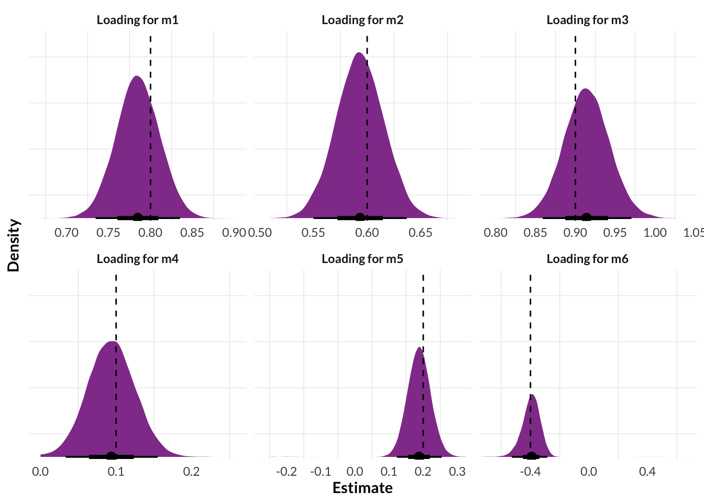
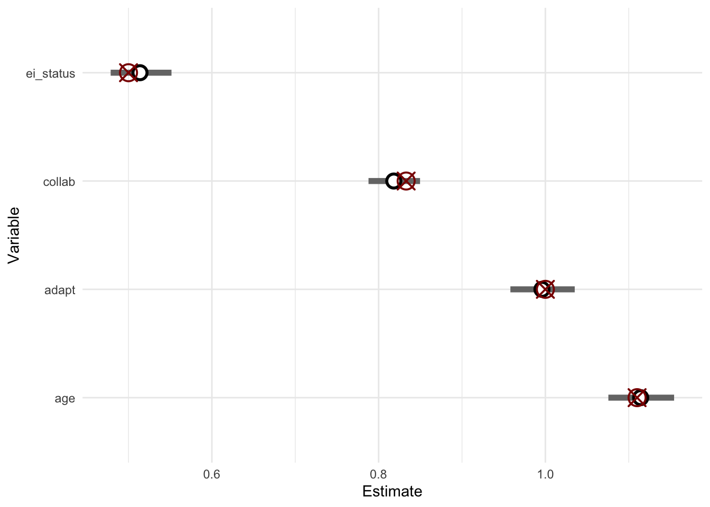
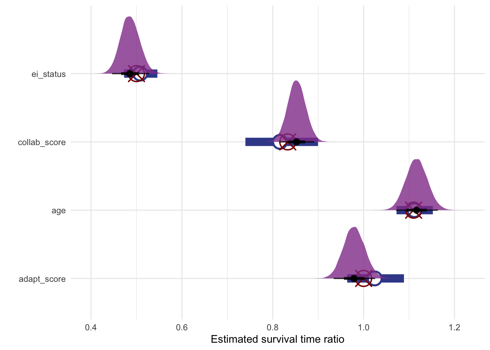
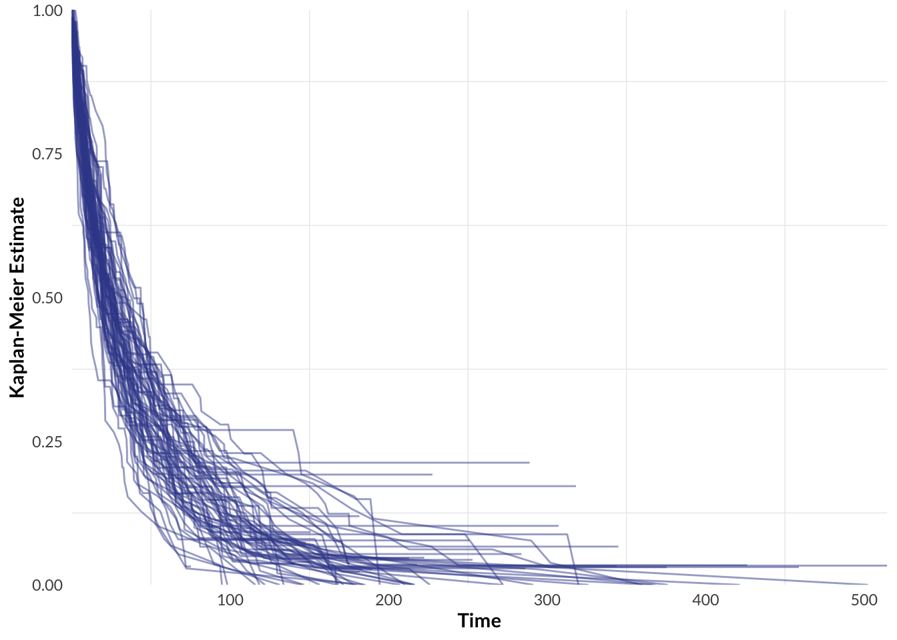
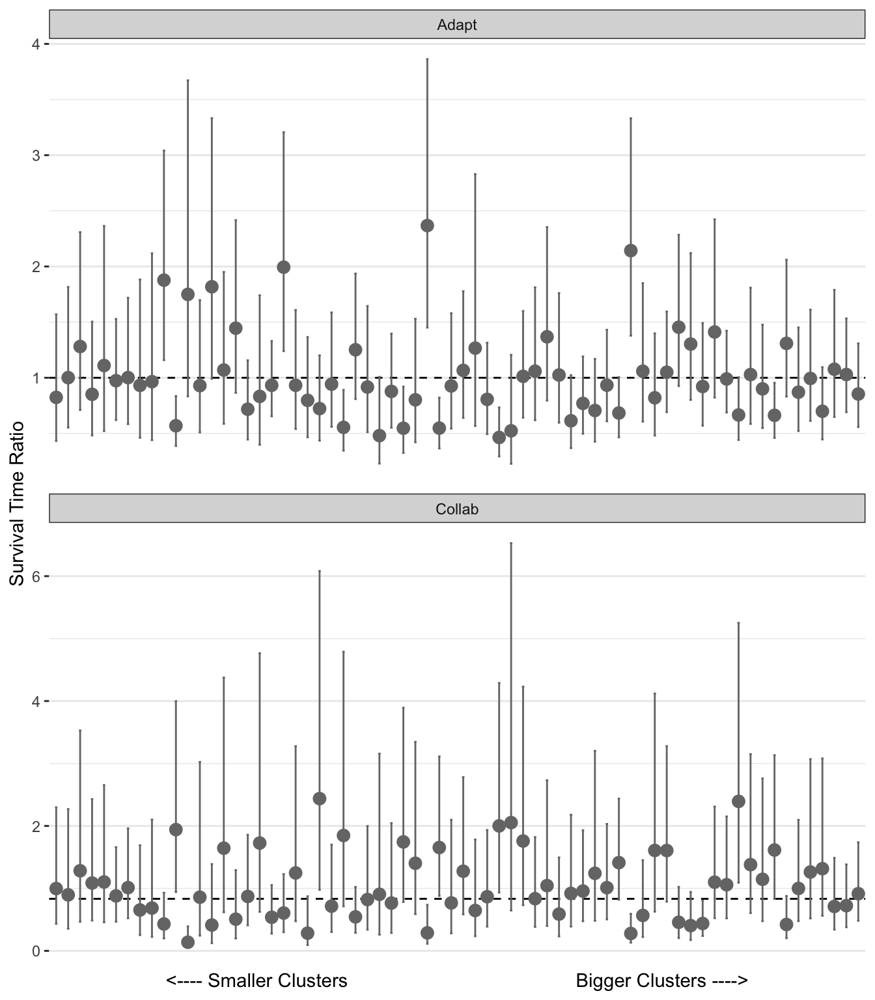
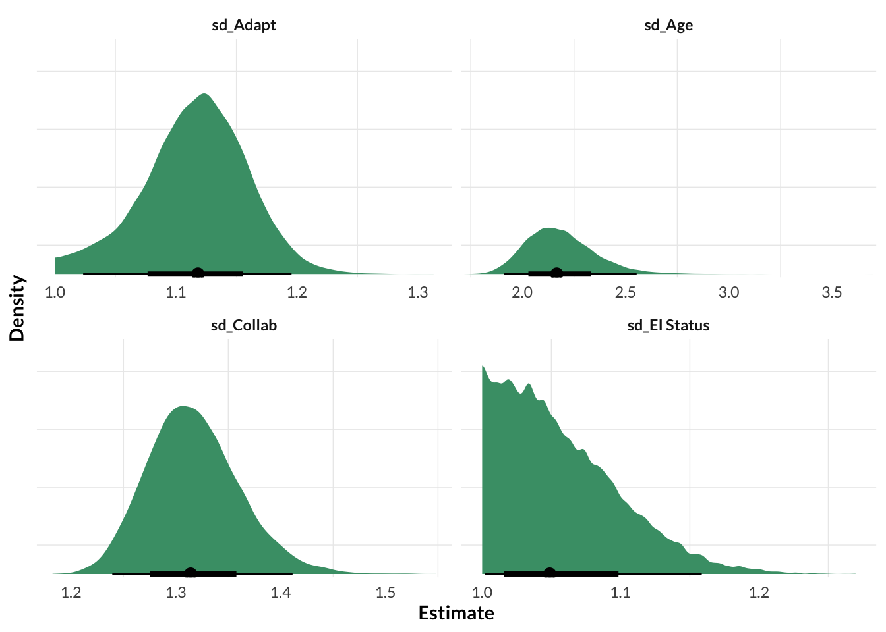
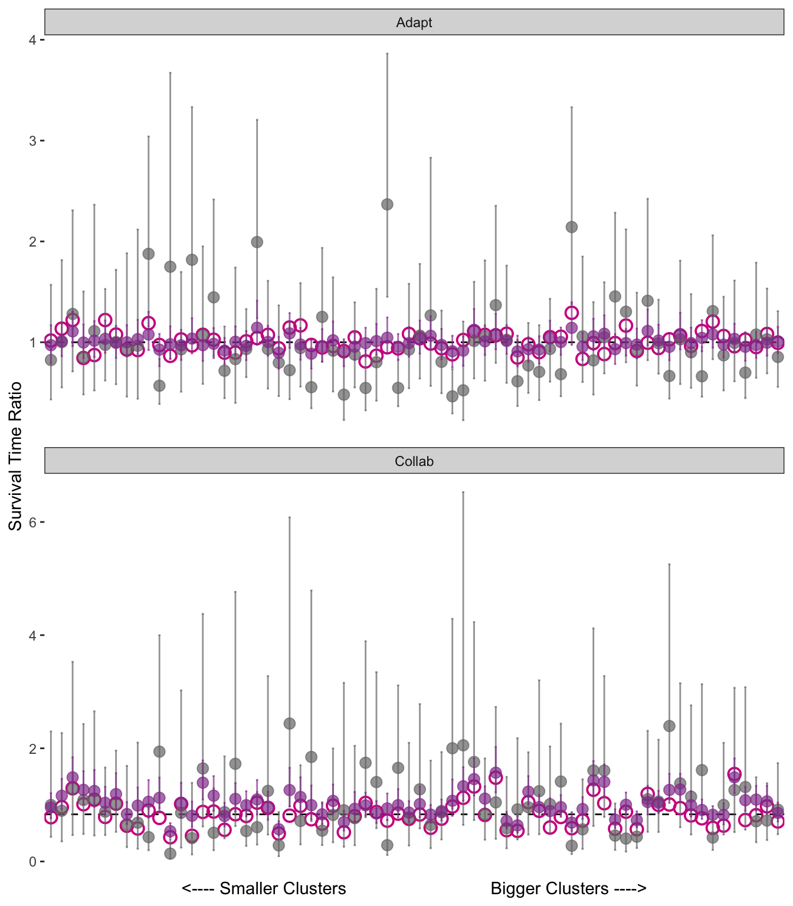

6Bayesian Multilevel Survival Analysis with Latent Predictors
Code
# Load packageslibrary(tidyverse)library(lavaan)library(blavaan)library(brms)library(tidybayes)library(survival)library(survminer)library(ggridges)# Stan backend specificationsoptions(brms.backend ="cmdstanr")options(mc.cores = parallel::detectCores())# Aesthetics. # Borrow the Gustav Klimt pallate from MetBrewer https://github.com/BlakeRMills/MetBrewer/blob/main/R/PaletteCode.Rclrs <-list(pink ="#df9ed4", red ="#c93f55", yellow ="#eacc62", green ="#469d76", blue ="#3c4b99", purple ="#924099")# Make a reusable ggplot theme, borrowing from Andrew Heiss: https://www.andrewheiss.com/blog/2022/05/20/marginalia/theme_nice <-function() {theme_minimal(base_family ="Lato") +theme(panel.grid.major =element_blank(),plot.background =element_rect(fill ="white", color =NA),plot.title =element_text(face ="bold"),axis.title =element_text(face ="bold"),strip.text =element_text(face ="bold"),legend.title =element_text(face ="bold"))}theme_posterior_densities <-function() {theme(axis.text.y =element_blank()) }
Summary
I recently completed an analysis for a client that designs employment skills training programs. They had developed some scales to measure latent traits related to employability, and were interested in the relationship between those traits and time-to-employment following a skills training program. I approached this using a Bayesian multilevel model to simultaneously estimate a confirmatory factor model for the latent variables and include them as predictors in a time-to-event analysis. This document uses simulated data to demonstrate a simplified version of that approach, and show its advantages over traditional two-stage approaches.
Along the way we’ll also see:
How to fit a factor analysis model in brms;
various approaches to simulating latent variable and time-to-event data for model validation, and demonstrate the advantages of the Bayesian approach to including latent regressors in a statistical model, compared to traditional two-stage approaches involving factor score point estimates.
6.1 Introduction
In the previous sections we’ve explored the traditional workflow for confirmatory factor analysis including the basic model structure, the concepts of validity and reliability, classic model goodness of fit tests, tests for measurement invariance, and experimenting with custom error covariance structures. These are all helpful tools for specifying quantitative theories about imaginary constructs, and testing those theories with data.
But often I’ll want to do more than just see whether my data are consistent with ?sec-intro: I’ll also have some theories about how those imagined constructs relate to other variables. If those other variables are themselves latent factors then we enter the world of ‘Structural Equation Modelling (SEM)’, which expands on the concepts of factor analysis to account for relationships between latent variables. I plan to add more chapters to this notebook covering the traditional SEM workflow, but as a first step towards full SEM it is helpful to explore a more basic situation where we and want to estimate the relationship between some latent variables and an observed outcome variable, as opposed to a latent outcome variable with its own measurement model.
A traditional way to incorporate latent variables from a factor analysis into a fuller regression analysis for a measured dependent variable proceeds in two steps:
Fit the CFA model;
Generate factor scores for each observation;
Use those factor scores as predictors in a regression.
This is the approach used by Kankaraš, Feron, and Renbarger (2019) in their study of the relationship between latent social/emotional skills and life outcomes such as academic achievement: the authors use point-estimate factor scores for the latent variables as predictors in the subsequent regressions on life outcome data. In some cases they even do this iteratively, fitting measurement models on point-estimate factor scores from measurement models fit on point-estimate factor scores, and using those point-estimates as regression predictors! This approach is unsatisfactory because factor scores are a function of the CFA model’s parameter estimates, about which there is uncertainty. By only using point-estimate factor scores in their regression models for the measured life outcomes, the authors ignore this uncertainty.
A better option is to fit a Bayesian model that fits the measurement model and the substantive regression model simultaneously, so that the model can incorporate its uncertainty from the CFA model into its substantive parameter estimates and predictions. As we’ll see below, this approach is essentially just a Bayesian missing data analysis, where the factor scores for each observation are treated as missing data for which the model estimates a unique observation-specific parameter, along with its own unique posterior distribution.
6.2 The Plan
In this document I’ll demonstrate how to implement this Bayesian approach with Stan. We’ll iterate on this model a few times, gradually incorporating concepts from previous chapters such as MTMM factor analysis. At each stage we’ll stick the following invented scenario: our client has designed scales for the latent skills “adaptability” and “collaboration”, and wants to test the validity of those scales and estimate their relationship with time-to-employment for their program graduates.
At each stage of the analysis we’ll simulate a new dataset reflecting our updated model, and show that the model can recover the true simulation parameter estimates. We’ll proceed as follows:
Fit a simple Bayesian CFA with one factor and a basic measurement error covariance structure. We use the brms package to illustrate how Bayesian factor analysis is the same as Bayesian missing data analysis, but where all of your observations are missing;
Fit a Bayesian CFA with two correlated factors. The brms package can’t yet handle custom covariance structures for latent factors, so we swtich to raw Stan;
Update the model to include a custom error covariance structure à la MTMM;
Combine the MTMM model from the previous step with a parametric proportional hazards regression model;
Expand the model to include multilevel structure, with correlated varying effects for the regression predictors.
This document assumes familiarity with Bayesian statistics, and with latent variable modelling at least up to the level covered in the previous sections of this workbook.
6.3 Simple Bayesian CFA with brms
Before diving into a full model with our two factors for “adaptability” and “collabortion”, in this section we’ll see how to fit a simple Bayesian CFA in brms. Nothing fancy, just one factor with 6 measurements. Here’s the full model definition:
First we can simulate some data with the given factor structure using the lavaan package’s handy simulateData() function:
Code
# Specify the factor structure in classic lavaan syntaxbasic.model <-' f1 =~ .8*m1 + .1*m2 + .6*m3 + .2*m4 + .9*m5 + -.4*m6'# Simulate data from the specified model fake_dat <- lavaan::simulateData(model = basic.model, sample.nobs =4000)
Now we can specify a Bayesian model in brms that recovers the simulation parameter values. I’ve worked from the approach shared by Jack Bailey in a post on the Stan forum. I like this approach because it gives a nice conceptual perspective on what we’re actually doing when we’re doing latant variable modelling: we’re just fitting a linear regression with multiple dependent variables drawn from a shared distribution, and where the linear models of their location parameters include a covariate for which we only have missing data. So the first thing we need to do is add a column of all missing data for each of the latent variables. Then we define the model with the same approach to identifiability constraints that lavaan imposes by default, I.E. constraining the first loading to be constant. The jargon term for this approach to ensuring identifiability is the ‘marker variable approach’:
Code
# Add the latent variable to the dataset as an all NA columnfake_dat$f1 <-NA_real_# Define the model, with the coefficient for m1 fied to a constant for identifiabilitybfit.1<-brm(formula =bf(m1 ~0+mi(f1)) +bf(m2 ~0+mi(f1)) +bf(m3 ~0+mi(f1)) +bf(m4 ~0+mi(f1)) +bf(m5 ~0+mi(f1)) +bf(m6 ~0+mi(f1)) +bf(f1|mi() ~1) +set_rescor(rescor =FALSE),family =gaussian(),prior =prior(constant(1), class ="b", resp ="m1") +## First loading fixed at 1, per the 'marker variable' approach. prior(constant(1), class ="sigma", resp ="m1") +prior(normal(0, 10), class ="b", resp ="m2") +prior(constant(1), class ="sigma", resp ="m2") +prior(normal(0, 10), class ="b", resp ="m3") +prior(constant(1), class ="sigma", resp ="m3") +prior(normal(0, 10), class ="b", resp ="m4") +prior(constant(1), class ="sigma", resp ="m4") +prior(normal(0, 10), class ="b", resp ="m5") +prior(constant(1), class ="sigma", resp ="m5") +prior(normal(0, 10), class ="b", resp ="m6") +prior(constant(1), class ="sigma", resp ="m6") +prior(normal(0, 10), class ="Intercept", resp ="f1") +prior(cauchy(0, 1), class ="sigma", resp ="f1"),data = fake_dat,warmup =1000,iter =6000,file ="fits/b07.01.rds")
A Bayesian missing data model treats each missing observation as a parameter to estimate. And since the factor is 100% missing data, this means we end up with 4000 rows of data x 6000 samples x 4 chains = 96,000,000 MCMC samples for the factor scores alone, resulting in a pretty big model file. This is too big for Github, so I’ll only push the draws we need to make sure the model recovered the true parameter estimates.
We can put the draws we need into a tidy format and do some cleaning, then we can plot them to visualize the approximated posteriors:
Code
bfit.1.samples <- bfit.1|># Get the raw MCMC samplesgather_draws( bsp_m2_mif1, bsp_m3_mif1, bsp_m4_mif1, bsp_m5_mif1, bsp_m6_mif1 ) |># Do some renaming for claritymutate(.variable =case_when( .variable =="bsp_m2_mif1"~"Loading for m2", .variable =="bsp_m3_mif1"~"Loading for m3", .variable =="bsp_m4_mif1"~"Loading for m4", .variable =="bsp_m5_mif1"~"Loading for m5", .variable =="bsp_m6_mif1"~"Loading for m6" )) |># Add the true factor loadings from abovemutate(true_loading =case_when( .variable =="Loading for m2"~ .1, .variable =="Loading for m3"~ .6, .variable =="Loading for m4"~ .2, .variable =="Loading for m5"~ .9, .variable =="Loading for m6"~-.4 )) # Save the tidy draws for reproducibilitysaveRDS(bfit.1.samples, "fits/b07.01.samples.rds")
Estimated posterior densities of factor loadings for CFA model fit with brms. The loading for m1 was not estimated because we used the marker variable approach for identifiability.
The model didn’t do a great job, with the true parameter values falling outside the 95% interval for all loadings. But the results are not totally off-base, and the model has successfully captured the overall magnitude and sign of each loading. This illustrates the general proof of concept that we can do a decent CFA in brms.
In practice I would probably not choose brms for a simple CFA of this kind, where we have no prior information to inform the parameter estimates and no need to incorporate uncertainty in factor score estimates into models of other variables. If I were committed to doing this sort of model Bayesianly then I would use the blavaan package, which works with lavaan syntax, allows you to specify custom priors, and is lightening-fast compared to the brms version implemented above. But blavaan is limited in the types of models it can handle, and cannot fit the type of time-to-event model we are heading towards here. Stan offers greater flexibility.
6.4 Bayesian CFA with Correlated Factors
Now let’s introduce our two factors “adaptability” and “collaboration”, and expand the model to assume these two latent factors may be correlated. People traditionally use this type of model to assess the discriminant validity of their factors, as we saw in Chapter 1. The only change from the model in the previous section is that now we imagine the two factors to be drawn from a shared bivariate normal distribution in which the diagonals are the factor-specific residual variances and the off-diagonals are the between-factor covariance, given as the product of their estimated correlation \(\rho\) and the two factor-specific variances. Here’s the updated model definition, with the covariance terms highlighted:
We can update the lavaan model structure from the previous section to simulate new data with correlated factors. Note that in the lavaan syntax f1 ~~ .4*f2 we are specifying the covariance between the factors, not the correlation. But as we’ll see later, the distinction doesn’t matter in this case.
Code
# Declare the new model with correlated factorscorrelated.factors.model <-' f1 =~ .8*m1 + .6*m2 + .9*m3 f2 =~ .1*m4 + .2*m5 + -.4*m6 f1 ~~ .4*f2'# Simulate data from the modelfake_dat <- lavaan::simulateData(model = correlated.factors.model, sample.nobs =4000)
Now to fit a model to the simulated data. We’ll use raw Stan from now on, because brms doesn’t currently support setting constraints on individual correlation terms in the model, even in the form of constant priors. There seems to be a plan to include more SEM-like flexibility of covariance matrixes in general in brms 3.0, but we do better to dive into raw Stan anyway for added flexibility.
I tried a few different model definitions in Stan, but they all had convergence issues and failed to recover the true parameter estimates. Convergence can be tricky in factor analysis, and things get even more complicated in a Bayesian context where we’re using MCMC to approximate the posterior. So I took to the Stan Forums, where I found a few people who had faced similar issues in Bayesian factor analysis. I have worked closely from the strategy provided in this comment by Mauricio Garnier-Villarre. Instead of the lavaan-default ‘marker variable approach’ to identifiability we used above in our brms model, Mauricio fixes the factor means and variances at 0 and 1, respectively, which has the benefit of letting the model freely estimate all of the factor loadings. He also adds some code to sign-correct the estimated loadings in the generated quantities{} block, which apparently helps align estimates across chains. I just make a few minor adjustments such as removing intercepts from the linear predictors of the factors to better align the model with the lavaan defaults. Here is the Stan code:
data {int N; // sample sizeint P; // number of variablesint D; // number of factorsarray[N] vector[P] X; // data matrix of order [N,P]int n_lam; // how many factor loadings are estimated}parameters {matrix[N, D] FS_UNC; // factor scores, matrix of order [N,D]cholesky_factor_corr[D] L_corr_d; // cholesky correlation between factorsvector<lower=0>[P] sd_p; // residual sd for each variablevector<lower=-30, upper=30>[n_lam] lam_UNC; // A bunch of lightly-constrained factor loadings}transformed parameters {// a vector to hold the factor means, which will be a bunch of 0svector[D] M; M = rep_vector(0, D);// a vector to hold the factor SDs, which will be a bunch of 1s. vector<lower=0>[D] Sd_d; Sd_d = rep_vector(1, D);// A vector to hold the linear predictors for the manifest variables, which are each a deterministic function of loading*factor_scorearray[N] vector[P] mu_UNC;for (i in1 : N) { mu_UNC[i, 1] = lam_UNC[1] * FS_UNC[i, 1]; mu_UNC[i, 2] = lam_UNC[2] * FS_UNC[i, 1]; mu_UNC[i, 3] = lam_UNC[3] * FS_UNC[i, 1]; mu_UNC[i, 4] = lam_UNC[4] * FS_UNC[i, 2]; mu_UNC[i, 5] = lam_UNC[5] * FS_UNC[i, 2]; mu_UNC[i, 6] = lam_UNC[6] * FS_UNC[i, 2]; }// the var-covar matrix for the factors, a deterministic function of the deterministic SDs and the estimated rhos defined in parameters{}cholesky_factor_cov[D] L_Sigma; L_Sigma = diag_pre_multiply(Sd_d, L_corr_d);}model {// Declare some priors L_corr_d ~ lkj_corr_cholesky(1); // Prior on factor corrs lam_UNC ~ normal(0, 10); // Prior on loadings sd_p ~ cauchy(0, 2.5); // Prior on residual SDs of manifest variables// Set up the likelihoods of the manifest and latent factorsfor (i in1 : N) {for (j in1 : P) {// Manifest variables X[i, j] ~ normal(mu_UNC[i, j], sd_p[j]); }// Latent factors FS_UNC[i] ~ multi_normal_cholesky(M, L_Sigma); }}generated quantities {corr_matrix[D] Rho_UNC; /// correlation matrixcorr_matrix[D] Rho; /// correlation matrixmatrix[P, D] lam; // factor loadingsmatrix[N, D] FS; // factor scores, matrix of order [N,D]// Do some fancy things to sign-correct the parameter estimates.// The idea seems to be that when we estimate the loadings with unconstrained signs// It can lead to identification issues. So we take these steps to correct the signs.// See this Stan forum comment for more: https://discourse.mc-stan.org/t/non-convergence-of-latent-variable-model/12450/10? Rho_UNC = multiply_lower_tri_self_transpose(L_corr_d); Rho = Rho_UNC; FS = FS_UNC; lam = rep_matrix(0, P, D); lam[1 : 3, 1] = to_vector(lam_UNC[1 : 3]); lam[4 : 6, 2] = to_vector(lam_UNC[4 : 6]);// factor 1if (lam_UNC[1] < 0) { lam[1 : 3, 1] = to_vector(-1 * lam_UNC[1 : 3]); FS[ : , 1] = to_vector(-1 * FS_UNC[ : , 1]);if (lam_UNC[4] > 0) { Rho[1, 2] = -1 * Rho_UNC[1, 2]; Rho[2, 1] = -1 * Rho_UNC[2, 1]; } }// factor 2if (lam_UNC[4] < 0) { lam[4 : 6, 2] = to_vector(-1 * lam_UNC[4 : 6]); FS[ : , 2] = to_vector(-1 * FS_UNC[ : , 2]);if (lam_UNC[1] > 0) { Rho[2, 1] = -1 * Rho_UNC[2, 1]; Rho[1, 2] = -1 * Rho_UNC[1, 2]; } }}
Now we can compile and run the model:
Code
# Write the raw Stan code from an R string to a Stan filestan_file <- cmdstanr::write_stan_file(stan_model_code)# Autoformat the model syntax to preempt any warnings at compile timemodel <- cmdstanr::cmdstan_model(stan_file, compile =FALSE)model$format(canonicalize =TRUE)# Compile the model from the Stan filemodel <- cmdstanr::cmdstan_model(stan_file)# Put the data into a list format Stan can understandX <-as.matrix(fake_dat)P <-ncol(fake_dat) N <-nrow(fake_dat)D <-2data_list <-list(N=N,P=P,D=D,X=X, n_lam=6)# Fit the modelfit <- model$sample(data = data_list,seed =199,chains =4,parallel_chains =4,iter_warmup =1000,iter_sampling =6000,adapt_delta=0.99, max_treedepth =12,refresh =100)# Save the resulting model fitsaveRDS(fit, "fits/b07.02.rds")
The model took about 5 hours to sample and the resulting .csv files containing the MCMC samples are large – on the order of 2.5GB each. Fortunately we are able to selectively load only the draws from variables we’re interested in, so we have no problem working in memory.
Code
# Load the cmdstanr model objectfit <-readRDS("fits/b07.02.rds")# Load the MCMC draws from the variables we care aboutdraws <- fit$draws(variables =c("lam[1,1]","lam[2,1]","lam[3,1]","lam[4,2]","lam[5,2]","lam[6,2]","Rho[2,1]" ))# Save the resultsaveRDS(draws, "fits/b07.02.samples.rds")
Now we can explore the results. One important point is that we can interpret the Stan model’s estimates of the correlation coefficient between the two factors directly as covariances (IE analogous to the true parameter simulated with lavaan), because we fixed the factor standard deviations to be equal to 1. Put differently, because our sigmas are both equal to 1, this equation:
We’re interested in the loadings and the between-factor covariance. So we can wrangle the MCMC samples for those variables and plot them to look at the estimated posteriers. First let’s look at the loadings. Based on this plot it looks like the model did pretty well – the posterior peak is close to the true value for all of the loadings:
Code
# Load the draws for the loadings and correlation draws <-readRDS("fits/b07.02.samples.rds")# Plotdplt <- draws |># Get the raw draws for the factor loadings and the beween-factor correlation coefficientgather_draws(`lam[1,1]`,`lam[2,1]`,`lam[3,1]`,`lam[4,2]`,`lam[5,2]`,`lam[6,2]`,`Rho[2,1]` ) |># Do some renaming for claritymutate(.variable =case_when( .variable =="lam[1,1]"~"Loading for m1", .variable =="lam[2,1]"~"Loading for m2", .variable =="lam[3,1]"~"Loading for m3", .variable =="lam[4,2]"~"Loading for m4", .variable =="lam[5,2]"~"Loading for m5", .variable =="lam[6,2]"~"Loading for m6", .variable =="Rho[2,1]"~"Covariance for f1 ~ f2", )) |># Add the true factor loadings for plottingmutate(true_loading =case_when( .variable =="Loading for m1"~ .8, .variable =="Loading for m2"~ .6, .variable =="Loading for m3"~ .9, .variable =="Loading for m4"~ .1, .variable =="Loading for m5"~ .2, .variable =="Loading for m6"~-.4, .variable =="Covariance for f1 ~ f2"~ .4 )) dplt |>filter(.variable !="Covariance for f1 ~ f2") |>ggplot(aes(x = .value, fill = .variable)) +stat_halfeye(fill = clrs$purple) +geom_vline(aes(xintercept = true_loading), linetype =2) +scale_x_continuous(expand =c(0, 0.015)) +scale_y_continuous(expand =c(0, 0.015)) +theme_nice() +theme_posterior_densities() +labs(x ="Estimate",y ="Density" ) +# theme_posterior_densities() +facet_wrap(~.variable, scales ="free_x")
Bayesian posterior intervals of factor loadings for CFA model fit with brms. All loadings are estimated because we do not use the ‘marker variable approach’ for identifiability
The model also seems to have accurately recovered the true between-factor covariance, albeit with some unwholesome weirdness in the tail of its approximated posterior. This weirdness appears to be pulling the mean estimate upwards away from the true parameter estimate:
We can also look at the MCMC convergence diagnostics such as rhat and effective number of samples. Here we see that we have rhats slightly greater than 1 for a few of the loadings and for rho. We also see that loading 4, loading 6, and rho have a pretty low number of effective samples. This is cause for concern, and in a real application I would probably increase the number of MCMC iterations to see if we can improve that effective sample size, and if that failed then I would think of ways to reparameterize the model.
The trace plots seem healthy overall, albeit with some occasional spikes and some parts where one chain goes berzerk relative to the others. Chain 4 for the between-factor correlation seems especially problematic, with it following a strange trajectory during its final iterations. Perhaps this explains why that variable has the highest rhat and displays some irregularity in the tail of its approximated posterior. Still, even for that parameter the chains seem generally healthy overall.
We can feel ok about the model’s performance here because it recovered the true parameter values fairly well, but the MCMC convergence checks suggest our chains were not totally happy.
One last thing before moving on: as mentioned above, we could have simply used the blavaan package to fit this model instead of fussing with custom Stan code. The blavaan version fits way faster and recovers the true parameter estimates. But blavaan is less flexible than Stan, and crucially for the present analysis, there is no way to do survival analysis with blavaan. But for posterity, below is the syntax we would use to fit the model with blavaan. If we specify mcmcfile = TRUE then the resulting Stan file gets written to a new directory called lavExport, or we can supply a filepath as the argument in which case the Stan file will get written there. The file is very large (over 1000 lines) and confusing, I think because it is precompiled to handle any possible model you could specify in R. The Stan documentation includes an example for specifying custom priors in a blavaan model.
Code
# Fit the model using the same lavaan-syntax model use used above to simulate the datasetblavfit.1<-bcfa(correlated.factors.model, data=fake_dat, mcmcfile = T)# Gaze at parameter estimatesblavfit.1|>summary()# Make sure the MCMC diagnostics are okblavInspect(blavfit.1, "mcobj")
6.5 Bayesian CFA with Custom Covariance Structure
Often in latent variable modelling we want to account for the possibility that certain measured variables are confounded by some shared unmeasured influences. One way to address this is to add another factor to the model to account for these unmeasured influences, but it can be simpler to just estimate a covariance term for those measured variables. This is what Brown (2006) calls a ‘correlated uniqueness model’. I have more detailed notes on these ideas in Chapter 3.
As an example of this scenario, we can imagine that the measured variables m1 and m4 are confounded because they were both collected by participant survey, while the other four measures were each collected by different means. To reflect this change in the model, we need to change the specification of the variance-covariance matrix of the shared multivariable likelihood of the measured variables: where before all of the off-diagonal elements were fixed at 0, now we need the off-diagonals representing the covariance between m1 and m4 to be freely estimated.
Here’s the updated model, with the new parameter highlighted in yellow:
We can simulate data from this DAG using lavaan like we did for the two models above, updating the syntax to give m1 and m4 a covariance of .4:
Code
# Declare the new lavaan model where m1 and m4 covarymtmm.model <-' f1 =~ .8*m1 + .6*m2 + .9*m3 f2 =~ .1*m4 + .2*m5 + -.4*m6 f1 ~~ .4*f2 m1 ~~ .4*m4'# Simulate data from the lavaan modelfake_dat <- lavaan::simulateData(model = mtmm.model, sample.nobs =4000)
We’ll also need to add a new parameter to our Stan model to account for the possibility that m1 and m4 covary. This only involves a few changes, namely:
Parameters Block: declare a matrix L_corr_m1_m4 to represent the Cholesky factorization of a correlation matrix between m1 and m4;
Transformed Parameters Block: declare the Cholesky factorization of a covariance matrix L_Sigma_m1_m4 and populate it by matrix-multiplying the standard deviations of m1 and m4 with the Cholesky factorization of the correlation matrix declared above;
Model Block:, declare m1 and m4 as drawn from a shared bivariate normal distribution separate from the other measured variables. This is equivalent to declaring all measured variales as drawn from a shared distribution like in the mathematical rendering of the model shown above, but it is simpler to implement. We can use the Cholesky factorization of a multivariate normal distribution, with the vector of the mu estimates of m1 and m4 as the mean vector, and the Cholesky factorization of the covariance matrix L_Sigma_m1_m4 we declared above as the covariance matrix.
Generated Quantities Block: pull out the correlation parameter for m1 and m4 from the estimated variance covariance matrix so we can analyze it.
data {int N; // sample sizeint P; // number of variablesint D; // number of factorsarray[N] vector[P] X; // data matrix of order [N,P]int n_lam; // how many factor loadings are estimated}parameters {matrix[N, D] FS_UNC; // factor scores, matrix of order [N,D]cholesky_factor_corr[D] L_corr_d; // cholesky correlation between factorscholesky_factor_corr[2] L_corr_m1_m4; // cholesky correlation between the m1 and m4vector<lower=0>[P] sd_p; // residual sd for each variablevector<lower=-30, upper=30>[n_lam] lam_UNC; // A bunch of lightly-constrained factor loadings}transformed parameters {// a vector to hold the factor means, which will be a bunch of 0svector[D] M; M = rep_vector(0, D);// a vector to hold the factor SDs, which will be a bunch of 1s. vector<lower=0>[D] Sd_d; Sd_d = rep_vector(1, D);// A vector to hold the linear predictors for the manifest variables, which are each a deterministic function of loading*factor_scorearray[N] vector[P] mu_UNC;for (i in1 : N) { mu_UNC[i, 1] = lam_UNC[1] * FS_UNC[i, 1]; mu_UNC[i, 2] = lam_UNC[2] * FS_UNC[i, 1]; mu_UNC[i, 3] = lam_UNC[3] * FS_UNC[i, 1]; mu_UNC[i, 4] = lam_UNC[4] * FS_UNC[i, 2]; mu_UNC[i, 5] = lam_UNC[5] * FS_UNC[i, 2]; mu_UNC[i, 6] = lam_UNC[6] * FS_UNC[i, 2]; }// the var-covar matrix for the factors, a deterministic function of the deterministic SDs and the estimated rhos defined in the parameters blockcholesky_factor_cov[D] L_Sigma; L_Sigma = diag_pre_multiply(Sd_d, L_corr_d);// Same, but for the var-covar matrix of m1 and m4cholesky_factor_cov[D] L_Sigma_m1_m4; L_Sigma_m1_m4 = diag_pre_multiply(sd_p[{1, 4}], L_corr_m1_m4);}model {// Declare some priors L_corr_d ~ lkj_corr_cholesky(1); // Prior on factor corrs L_corr_m1_m4 ~ lkj_corr_cholesky(1); // Prior on corr between m1 and m4 lam_UNC ~ normal(0, 10); // Prior on loadings sd_p ~ cauchy(0, 2.5); // Prior on residual SDs of manifest variables// Set up the joint log likelihood functionfor (i in1 : N) {// The uncorrelated measured variablesfor (j in {2,3,5,6}) {// Manifest variables X[i, j] ~ normal(mu_UNC[i, j], sd_p[j]); }// m1 and m4, which get special treatment for being correlated to_vector({X[i, 1], X[i, 4]}) ~ multi_normal_cholesky([mu_UNC[i, 1], mu_UNC[i, 4]]', L_Sigma_m1_m4);// Latent factors FS_UNC[i] ~ multi_normal_cholesky(M, L_Sigma); }}generated quantities {corr_matrix[D] Rho_UNC; /// correlation matrix for factorscorr_matrix[D] Rho_factors; /// correlation matrix for factorscorr_matrix[D] Rho_m1_m4; /// correlation matrix for m1 and m4matrix[P, D] lam; // factor loadingsmatrix[N, D] FS; // factor scores, matrix of order [N,D]// Do some fancy things to sign-correct the parameter estimates.// The idea seems to be that when we estimate the loadings with unconstrained signs// It can lead to identification issues. So we take these steps to correct the signs.// See this Stan forum comment for more: https://discourse.mc-stan.org/t/non-convergence-of-latent-variable-model/12450/10 Rho_UNC = multiply_lower_tri_self_transpose(L_corr_d); Rho_factors = Rho_UNC; Rho_m1_m4 = multiply_lower_tri_self_transpose(L_corr_m1_m4); FS = FS_UNC; lam = rep_matrix(0, P, D); lam[1 : 3, 1] = to_vector(lam_UNC[1 : 3]); lam[4 : 6, 2] = to_vector(lam_UNC[4 : 6]);// factor 1if (lam_UNC[1] < 0) { lam[1 : 3, 1] = to_vector(-1 * lam_UNC[1 : 3]); FS[ : , 1] = to_vector(-1 * FS_UNC[ : , 1]);if (lam_UNC[4] > 0) { Rho_factors[1, 2] = -1 * Rho_UNC[1, 2]; Rho_factors[2, 1] = -1 * Rho_UNC[2, 1]; } }// factor 2if (lam_UNC[4] < 0) { lam[4 : 6, 2] = to_vector(-1 * lam_UNC[4 : 6]); FS[ : , 2] = to_vector(-1 * FS_UNC[ : , 2]);if (lam_UNC[1] > 0) { Rho_factors[2, 1] = -1 * Rho_UNC[2, 1]; Rho_factors[1, 2] = -1 * Rho_UNC[1, 2]; } }}
Now we can compile and run the model:
Code
# Write the raw Stan code from an R string to a Stan filestan_file <- cmdstanr::write_stan_file(stan_model_code)# Autoformat the model syntax to preempt any warnings at compile timemodel <- cmdstanr::cmdstan_model(stan_file, compile =FALSE)model$format(canonicalize =TRUE)# Compile the model from the Stan filemodel <- cmdstanr::cmdstan_model(stan_file)# Put the data into a list format Stan can understandX <-as.matrix(fake_dat)P <-ncol(fake_dat) N <-nrow(fake_dat)D <-2data_list <-list(N=N,P=P,D=D,X=X, n_lam=6)# Fit the modelfit <- model$sample(data = data_list,seed =199,ftimeschains =4,parallel_chains =4,iter_warmup =1000,iter_sampling =6000,refresh =100)# Save the resulting model fitsaveRDS(fit, "fits/b07.03.rds")
Once again, the resulting object is enormous. So let’s pare it down to only contain the draws of substantive interest.
Code
# Load the cmdstanr model objectfit <-readRDS("fits/b07.03.rds")# Load the MCMC draws from the variables we care aboutdraws <- fit$draws(variables =c("lam[1,1]","lam[2,1]","lam[3,1]","lam[4,2]","lam[5,2]","lam[6,2]","Rho_factors[2,1]", "Rho_m1_m4[2,1]" ))# Save the resultsaveRDS(draws, "fits/b07.03.samples.rds")
How did that go? It looks like the model did a good job recovering the true loadings:
Code
# Load the draws saved in the previous blockdraws <-readRDS("fits/b07.03.samples.rds")# Prepare the data for plottingdplt <- draws |># Get the raw draws for the factor loadings and the beween-factor correlation coefficientgather_draws(`lam[1,1]`,`lam[2,1]`,`lam[3,1]`,`lam[4,2]`,`lam[5,2]`,`lam[6,2]`,`Rho_factors[2,1]`,`Rho_m1_m4[2,1]`, ) |># Do some renaming for claritymutate(.variable =case_when( .variable =="lam[1,1]"~"Loading for m1", .variable =="lam[2,1]"~"Loading for m2", .variable =="lam[3,1]"~"Loading for m3", .variable =="lam[4,2]"~"Loading for m4", .variable =="lam[5,2]"~"Loading for m5", .variable =="lam[6,2]"~"Loading for m6", .variable =="Rho_factors[2,1]"~"Covariance for f1 ~ f2", .variable =="Rho_m1_m4[2,1]"~"Covariance for m1 ~ m4" )) |># Add the true factor loadings for plottingmutate(true_loading =case_when( .variable =="Loading for m1"~ .8, .variable =="Loading for m2"~ .6, .variable =="Loading for m3"~ .9, .variable =="Loading for m4"~ .1, .variable =="Loading for m5"~ .2, .variable =="Loading for m6"~-.4, .variable =="Covariance for f1 ~ f2"~ .4, .variable =="Covariance for m1 ~ m4"~ .4 )) # Plot the loadingsdplt |>filter(!.variable %in%c("Covariance for f1 ~ f2", "Covariance for m1 ~ m4")) |>ggplot(aes(x = .value, fill = .variable)) +stat_halfeye(fill = clrs$purple) +geom_vline(aes(xintercept = true_loading), linetype =2) +scale_x_continuous(expand =c(0, 0.015)) +scale_y_continuous(expand =c(0, 0.015)) +guides(fill ="none") +theme_nice() +theme_posterior_densities() +labs(x ="Estimate",y ="Density" ) +facet_wrap(~.variable, scales ="free_x")

And things are looking good for the covariance terms as well:
Code
# Plot the covariance stuffdplt |>filter(.variable %in%c("Covariance for f1 ~ f2", "Covariance for m1 ~ m4")) |># For visual clarity, to get rid of some weird drawsfilter(.value >0) |>ggplot(aes(x = .value, fill = .variable)) +stat_halfeye(aes(fill = .variable)) +geom_vline(aes(xintercept = true_loading), linetype =2) +scale_fill_manual(values =c(clrs$red, clrs$yellow)) +scale_x_continuous(expand =c(0, 0.015)) +scale_y_continuous(expand =c(0, 0.015)) +guides(fill ="none") +labs(x ="lab",y =NULL) +facet_wrap(~.variable, scales ="free_x") +theme_nice() +theme_posterior_densities() +labs(x ="Estimate",y ="Density" ) +facet_wrap(~.variable, scales ="free_x")
Out of curiosity we can also check the MCMC diagnostics. The Rhats and effective sample sizes are looking a bit healthier than the previous model, which is interesting considering we’ve made the model more complex by adding a new parameter.
6.6 Bayesian Survival Analysis with Latent Predictors
Now that we’re confident our CFA MTMM Stan model is well-specified, we can incorporate the substantive regression model for the outcome of interest: time to employment.
The updated model is shown below. All we’ve done is add two new lines at the top, shown in blue. These lines say we imagine time-to-event \(T\) for each person \(i\) to be drawn from a Weibull distribution, whose location parameter is a linear model of the latent factors \(\text{adapt}\) and \(\text{collab}\), as well as other measured variables in the matrix \(\mathbf{X}\), each with its own coefficient in the vector \(\boldsymbol{\beta}\).
Why a Weibull likelihood? According to Collett (2003), this is a common choice for parameteric survival analysis because it corresponds to a flexible monotonic baseline hazard function, which often feels like a safe assumption that is neither too rigid (like an exponential likelihood and corresponding flat baseline hazard function) nor too flexible (like a spline with many knots). It also has the advantage of being interpretable as both a Proportional Hazards regression or as an Accelerated Failure Time regression, which gives us flexibility in how we communicate about the parameter estimates, and allows us to not worry too much about the proportional hazards assumption.
6.6.1 Data Simulation and Validation
Unlike in previous sections, here we won’t be able to rely on lavaan::simulateData() to create our simulated data, because it can’t generate time-to-event data. So we’ll need to generate the data ourselves. Mark Lai has shared some nice code to do this, which I adapt slightly to allow for covariance between m1 and m4 as in the MTMM model above.
Now we have our ‘measured’ variables, simulated according to our chosen factor loadings and error structure. Just to be safe, let’s make sure lavaan can recover the true parameter estimates. We need to specify std.lv = TRUE to override lavaan’s default behaviour of using the marker variable approach for identifiability, and instead fix the variances of the latent variables to 1. If we don’t do this then the model doesn’t return the true simulated parameter estimates because the scales of the latent variables are transformed. Looks like lavaan can recover the true parameter estimates, which means our data simulation code does what we think it does:
Code
surv.measurement.model <-' f1 =~ m1 + m2 + m3 f2 =~ m4 + m5 + m6 f1 ~~ f1 f2 ~~ f2 m1 ~~ m4'# Fit the modelfit_test <-cfa(surv.measurement.model, data = fake_dat_measurement |>select(starts_with("m")), std.lv =TRUE)# Make sure it worksfit_test |> broom::tidy() |>select(term, estimate) |> knitr::kable()
term
estimate
f1 =~ m1
0.8517471
f1 =~ m2
0.5845361
f1 =~ m3
0.9020232
f2 =~ m4
0.1672665
f2 =~ m5
0.2142330
f2 =~ m6
-0.3874742
f1 ~~ f1
1.0000000
f2 ~~ f2
1.0000000
m1 ~~ m4
0.4026940
m1 ~~ m1
0.9362546
m2 ~~ m2
0.9463030
m3 ~~ m3
0.9816329
m4 ~~ m4
0.9741829
m5 ~~ m5
0.9947676
m6 ~~ m6
0.9817417
f1 ~~ f2
0.4249148
Now we need to simulate the demographic variables and time-to-event data. We can draw the covariates straightforwardly from the relevent distributions, but the times-to-event will require a bit more thought. There are existing packages for simulating survival data in R (such as simsurv by Sam Brilleman of rstanarm fame) but since we took an explicit approach to simulating the latent variables this time, it’s nice to continue in that fashion for the entire dataset. I found this Stack Exchange answer by user Ryan SY Kwan helpful for learning an explicit workflow for simulating survival data from a Weibull distribution, which I implement here.
Firstly, it’s convenient to express the Weibull distribution’s shape parameter with reference to the linear model, so that we can use R’s built-in rweibull() function to sample our event times. We can start from the PDF of the Weibull distribution:
Since this is directly equivalent to the model for the actual function of interest, the baseline hazard. As Singer and Willett (2003) put it, “This direct equivalence may not be intuitive, but it certainly is invaluable.”
So we can take the definition of the Weibull cumulative hazard function we found above and substitute it into this equation, then take its negative exp to get it back in terms of the survival function:
Now we can rearrange things to make the scale parameter \(\lambda\) itself a function of the linear model. This allows us to use R’s built-in rweibull() function to generate the event times. All we need is some fancy algebra:
Now the denominator incorporates both \(\lambda\) and the linear model. So we can just take the whole denominator and call it its own new thing \(\lambda'\):
Thus we’ve snuck our linear model into the classic no-model definition of the Weibull survival function we saw above, just with \(\lambda'\) instead of \(\lambda\):
This is the parameterization we can implement when we go to create our event times. We’ll also imagine censoring times to be drawn from an unconditional exponential distribution, which creates non-informative censoring. We’ll generate an event time and a censoring time for each person, and a person’s status will be the shorter of those two times. We can start by choosing values for the Weibull distribution’s rho and lambda parameters that generate a realistic-seeming distribution of times-to-employment in the absence of a linear model. This is simpler conceptually if we define rho = 1. After some trial and error I settled on lambda = .02, which results in a mean time-to-employment of 22 days in the simulated dataset.
Now we can choose the simulated parameter values for the linear model. It’s a bit tricky to understand what these parameter values mean on the outcome scale, because as mentioned above, Weibull regression parameters can be interpreted either as hazard ratios or acceleration factors. Brilleman et al. (2020) provide a clear overview:
\(\exp(-\beta_p(t))\) is an acceleration factor: Sub-zero values of the transformed parameter estimates correspond to slower event times.
\(\exp(\beta_p(t))\) is a survival time ratio: Sub-zero values of the transformed parameter estimates correspond to faster event times.
So we can declare them as survival time ratios for simplicity when implementing the simulation, but the survival package and Stan will return acceleration factors by default. This nice markdown document provides a walkthrough of the transformations required to move between these two interpretations in R. For example, we can imagine that being on employment insurance is associated with twice-as-fast time-to-employment because it means you have recent work experience. We simulate this by setting the coefficient beta_ie <- log(2), which corresponds to a survival time ratio of 2 and an acceleration factor of .5. Likewise, we can imagine that a one-unit increase in the latent trait ‘Collaboration Skills’ is associated with 20% faster job attainment, so we set beta_collab <- log(1.2), which corresponds to an acceleration factor of exp(-log(1.2)) ~ 0.833. We can proceed in the same way for the other parameter estimates.
Code
# Declare some parameter values for baseline hazardlambda <- .02rho <-1# keep rho = 1 to keep the conversions simple / make it easier to specify lambdalambda_wiki <- lambda^(-1/ rho) # Declare some true linear model parametersbeta_adapt <-log(1) # adaptability skills have no effect on time-to-employmentbeta_collab <-log(1.2) # collaboration skills decrease time-to-employment by 20% for each standard deviation increase.beta_age <-log(.9) # older people find employment a bit slower -- each increase in age of 1 standard deviation slows time-to-employment to 90% of what is was previously.beta_ei <-log(2) # people on EI find employment twice as fast # Declare the rate for the exponential distribution from which we will sample censoring timescensor_rate = .02# Simulate the covariates and event timesfake_dat <- fake_dat_measurement |>rowid_to_column() |>mutate(# Simulate the covariatesage =rnorm(N), ei_status =rbinom(N, 1, .4) ) |>group_by(rowid) |>mutate(# Simulate the event times and censoring timeslambda_prime = lambda_wiki /exp((beta_adapt*adapt + beta_collab*collab + beta_age*age + beta_ei*ei_status) / rho),time_event =rweibull(1, shape=rho, scale=lambda_prime),time_censor =rexp(1, censor_rate),time =min(time_event, time_censor),censored =ifelse(time_censor <= time_event, 1, 0),status =ifelse(time_censor > time_event, 1, 0) ) |>ungroup() |># Remove the intermediary variables we don't needselect(-c( lambda_prime, time_event, time_censor ))
If we’ve done everything correctly then a basic survival analysis should be able to recover the true parameter estimates using the true model specification. Indeed, this is what we see:
Code
# Create the surv objectsurv_object <-Surv(fake_dat$time, fake_dat$status)# Fit the model using the surv objecttest <-survreg(surv_object ~ adapt + collab + age + ei_status, data=fake_dat, dist='weibull')# Wrangle and plottest |> broom::tidy(conf.int =TRUE) |>mutate(estimate =exp(estimate),conf.low =exp(conf.low),conf.high =exp(conf.high) ) |>filter(!term %in%c("(Intercept)", "Log(scale)")) |>mutate(true_loading =case_when( term =="age"~1.11, term =="collab"~0.833, term =="adapt"~1, term =="ei_status"~0.5 )) |>ggplot(aes(x =reorder(term, -estimate), y = estimate)) +geom_point() +geom_linerange(aes(ymin = conf.low, ymax = conf.high), size =2, colour ="grey") +geom_point(size =5, colour ="black") +geom_point(size =3, color ="white") +geom_point(aes(x = term, y = true_loading), colour ="red4", size =5, shape =13, stroke =1) +coord_flip() +labs(y ="Estimate",x ="Variable" ) +theme_minimal()

A basic survival model recovers the true parameter values. Model estimates and 95% CIs shown in purple, true parameter values shown as red targets.
Now that we’ve simulated our full dataset, we can do some basic exploratory analysis of the data to make sure the event times make sense:
Histogram of times-to-event, including employment outcomes and censorings.
It’s also a good idea to plot some stratified kaplan-meier curves to make sure parameter estimates mean what we think they mean. For example, we see that when we stratify by ei_status those with ei_status == TRUE see faster estimated event times, which is what we intended:
Kaplan-Meier estimated survival curves, stratified by EI Status.
6.6.2 Prior Predictive Simulation
Unlike the factor analysis models we fit above, this model has substantive predictor variables, namely age, ei_status, and the two latent variables adapt and collab. Based on previous research, we have a sense of the types of parameter estimates that seem realistic for these predictors. So can use prior predictive simulation to specify informative priors. Here’s what we’ll do: 1. Write some simple code to simulate from the prior distributions of interest; 2. Transform the simulated values to check whether the priors make sense on the scale of interest; 3. Once we arrive at reasonable-seeming priors for all of the parameters, we can use brms to simulate event times from the prior predictive distribution and make sure everything is making sense.
The brms parameterization of the Weibull distribution is slightly different than the one used in the survival package, with brms specifying a mean parameter as a function of the scale and shape parameters of the more traditional parameterization:
$$
\[\begin{align*}
s = \frac{\mu}{\Gamma\left(1 + \frac{1}{\alpha}\right)}
\end{align*}\] $$
So when we specify a prior for the intercept term in our Bayesian model, we’re also specifying a prior for this transformation of the scale and shape parameters under the traditional parameterization:
$$
\[\begin{align*}
\mu = s \times \Gamma\left(1 + \frac{1}{\alpha}\right)
\end{align*}\]
$$
I don’t think this has any big implications: setting a prior for the intercept is more intuitive than setting a prior for the scale and shape parameters indivdually anyway. We can copy this approach when we go to fit our Stan model.
Let’s start with the prior for the intercept, specifying a prior on the raw ‘days-to-employment’ scale because that helps keep things interpretable.
Based on previous studies I’ve done at my work, an average time-to-employment of 30 days seems reasonable, and an average higher than 60 days seems very unlikely. After much trial and error with the code below it seems like a gaussian with mean = 3.3, sd = .4 gives a distribution with appropriate characteristics to represent our uncertainty about average time-to-employment:
Prior predictive check for average time-to-employment: draws from a gaussian distribution with mean = 3.3, and sd = .4
Now for the beta coefficients. We can think of ourselves as settings priors as on log acceleration factors, so the exponentiated draws from the prior should reflect our uncertainty about how a one-unit change in that covariate might be associated with a faster or slower time-to-employment, keeping all other measured covariates equal. For any of the covariates, an acceleration factor of 10 or more in either direction (I.E. 10 or 0.10) seems pretty unlikely. As with the intercept, we fiddle with the code until we get a distribution that has the properties we want. much trial and error it seems like a gaussian with mean = 0, sd = 1.45 captures this ‘factor of 5’ intuition, with a factor of 10 or greater being associated with a probability of only about 5% in either direction.
Prior predictive check for Weibull regression parameter estimates: exponentiated draws from a gaussian distribution with mean = 0, and sd = 1.45
Now that we have some reasonable priors, we can sample from them to simulate from the prior predictive distribution. I don’t have any background knowledge to inform the estimate of the shape parameter, so we can set a conventional cauchy(0, 2.5) prior to keep it vague. The resulting densities of bounded 1-year times-to-event look reasonable to me, and there is plenty of uncertainty leftover for the model to refine its predictions after it sees the data.
Code
# Declare the formulabf <-formula(time |cens(censored) ~0+ Intercept + adapt + collab + age + ei_status)# See how brms names the parameters, so we know how to specify priors form them# get_prior(# formula = bf,# data = fake_dat,# family = weibull()#)# Declare the priors we wantpriors <-c(prior(normal(3.3, .4), class ="b", coef ="Intercept"), # The average time-to-employment. Use gamma because times are positive and continuousprior(cauchy(0, 2.5), class ="shape"), # Constrain the shape parameter, or else it thinks event times can go on basically forever.prior(normal(0, 1.45), class ="b", coef ="adapt"),prior(normal(0, 1.45), class ="b", coef ="age"),prior(normal(0, 1.45), class ="b", coef ="collab"),prior(normal(0, 1.45), class ="b", coef ="ei_status") )# Fit the modelfit.prior <-brm(data = fake_dat,formula = bf,family =weibull(),prior = priors,sample_prior ="only",iter =2000,file ="fits/b07.04.priors.rds")# Figure out what brms has named everything so we can wrangle the draws# get_variables(fit.prior)# Check the prior predictive distributionprior_preds <- fake_dat |>add_predicted_draws(fit.prior, ndraws =500) |>group_by(rowid) |>mutate(prior_pred_mean =mean(.prediction)) prior_preds |>ggplot() +geom_density(aes(x = .prediction, group = .draw), colour=alpha(clrs$pink, .3)) +scale_y_continuous(expand=c(0, 0)) +xlim(c(1, 100)) +ylim(c(0, .08)) +theme_nice() +theme_posterior_densities() +xlab("Days to employment")
Densities for 500 draws from the prior predictive distribution of event times. X-axis truncated for visual clarity.
We can also check the distribution of certain statistics under the prior predictive distribution, like the mean time to event. This is something Gelman et al. (2020) advocate in their Bayesian Workflow paper. This reveals an area where our model seems a bit dumb: while the mode of the means is well within our desired range of values, there is a very long tail. This is because the Weibull distribution preserves a long tail of event times,and we haven’t told it that event times like 400,000 days are strictly out of the question. And even though the model assigns very tiny probability to these types of numbers, they are still there, non-zero, pulling up the mean of the prior predictive distribution. We can address this when we go to code the raw Stan model by specifying better boundaries on priors and the outcome itself. Or we could give the model this information in other ways, for example by changing the response distribution entirely, perhaps using a 1-inflated beta distribution to model the proportion of a year until a person found a job, topcoding anybody who took more than a year as 1. But for now let’s stick with the plan and see if the model is able to recover the true parameter estimates and come up with reasonable posterior predictive distribution despite these imperfect priors.
Mean event times of 500 draws from the prior predictive distribution of event times.
6.6.3 Fitting the Stan Model
Now we’re ready to fit the survival model using the latent factors as predictors.
data {// Factor Analysisint N; // sample size for both modelsint P; // number of variables in the factor analysisint D; // number of factorsarray[N] vector[P] X_factor; // data matrix for factor analysisint n_lam; // how many factor loadings are estimated// Weibull Modelvector[N] Y; // response variable for Weibull modelarray[N] int<lower=-1, upper=2> cens; // indicates censoring for Weibull modelint K; // number of predictors in Weibull model, now it should be D + 2 + interceptmatrix[N, K] X_weibull; // population-level design matrix for Weibull model}parameters {matrix[N, D] FS_UNC; // factor scorescholesky_factor_corr[D] L_corr_d; // cholesky correlation between factorscholesky_factor_corr[2] L_corr_m1_m4; // cholesky correlation between the m1 and m4vector<lower=0>[P] sd_p; // residual sd for each variable in factor analysisvector<lower=-30, upper=30>[n_lam] lam_UNC; // A bunch of lightly-constrained factor loadingsreal<lower=0> shape; // shape parameter for Weibull modelvector[K] b; // regression coefficients for Weibull model}transformed parameters {// Factor Analysis transformed parametersvector[D] M = rep_vector(0, D); // factor meansvector<lower=0>[D] Sd_d = rep_vector(1, D); // factor SDsarray[N] vector[P] mu_UNC; // A vector to hold the linear predictors for the manifest variablesfor (i in1 : N) { mu_UNC[i, 1] = lam_UNC[1] * FS_UNC[i, 1]; mu_UNC[i, 2] = lam_UNC[2] * FS_UNC[i, 1]; mu_UNC[i, 3] = lam_UNC[3] * FS_UNC[i, 1]; mu_UNC[i, 4] = lam_UNC[4] * FS_UNC[i, 2]; mu_UNC[i, 5] = lam_UNC[5] * FS_UNC[i, 2]; mu_UNC[i, 6] = lam_UNC[6] * FS_UNC[i, 2]; }cholesky_factor_cov[D] L_Sigma = diag_pre_multiply(Sd_d, L_corr_d); // var-covar matrix for the factorscholesky_factor_cov[D] L_Sigma_m1_m4 = diag_pre_multiply(sd_p[{1, 4}], L_corr_m1_m4); // var-covar matrix of m1 and m4// Weibull transformed parametersvector[N] mu_weibull = rep_vector(0.0, N); // initialize linear predictor term for Weibull model mu_weibull += X_weibull * b; // use both factor scores and observed predictors as predictors}model {// Factor Analysis L_corr_d ~ lkj_corr_cholesky(1); L_corr_m1_m4 ~ lkj_corr_cholesky(1); lam_UNC ~ normal(0, 10); sd_p ~ cauchy(0, 2.5);for (i in1 : N) {for (j in {2,3,5,6}) { X_factor[i, j] ~ normal(mu_UNC[i, j], sd_p[j]); } to_vector({X_factor[i, 1], X_factor[i, 4]}) ~ multi_normal_cholesky([mu_UNC[i, 1], mu_UNC[i, 4]]', L_Sigma_m1_m4); FS_UNC[i] ~ multi_normal_cholesky(M, L_Sigma); }// Weibull Survival Analysis shape ~ cauchy(0, 2.5); b[1] ~ normal(3.3, 0.4);for (k in2:K) { b[k] ~ normal(0, 1.45); }for (n in1 : N) {if (cens[n] == 0) {target += weibull_lpdf(Y[n] | shape, exp(mu_weibull[n]) / tgamma(1 + 1 / shape)); } elseif (cens[n] == 1) {target += weibull_lccdf(Y[n] | shape, exp(mu_weibull[n]) / tgamma(1 + 1 / shape)); } }}generated quantities {corr_matrix[D] Rho_UNC; // correlation matrix for factorscorr_matrix[D] Rho_factors; // correlation matrix for factorscorr_matrix[D] Rho_m1_m4; // correlation matrix for m1 and m4matrix[P, D] lam; // factor loadingsmatrix[N, D] FS; // factor scores Rho_UNC = multiply_lower_tri_self_transpose(L_corr_d); Rho_factors = Rho_UNC; Rho_m1_m4 = multiply_lower_tri_self_transpose(L_corr_m1_m4); FS = FS_UNC; lam = rep_matrix(0, P, D); lam[1 : 3, 1] = to_vector(lam_UNC[1 : 3]); lam[4 : 6, 2] = to_vector(lam_UNC[4 : 6]);if (lam_UNC[1] < 0) { lam[1 : 3, 1] = to_vector(-1 * lam_UNC[1 : 3]); FS[ : , 1] = to_vector(-1 * FS_UNC[ : , 1]);if (lam_UNC[4] > 0) { Rho_factors[1, 2] = -1 * Rho_UNC[1, 2]; Rho_factors[2, 1] = -1 * Rho_UNC[2, 1]; } }if (lam_UNC[4] < 0) { lam[4 : 6, 2] = to_vector(-1 * lam_UNC[4 : 6]); FS[ : , 2] = to_vector(-1 * FS_UNC[ : , 2]);if (lam_UNC[1] > 0) { Rho_factors[2, 1] = -1 * Rho_UNC[2, 1]; Rho_factors[1, 2] = -1 * Rho_UNC[1, 2]; } }// Draws from posterior predictive distributionvector[N] y_pred;for (n in1:N) { y_pred[n] = weibull_rng(shape, exp(mu_weibull[n]) / tgamma(1 + 1 / shape)); }}
Now compline the model and run. I’ve worked closely from the Stan code for the Weibull model we fit with brms above, essentially just grafting it onto the MTMM factor analysis model from before. This only involved a few steps:
Data block: add new vectors for the response variable Y and predictor variables K of the Weibull model, and for censoring status cens. Also declare the design matrix X_weibull of the necessary dimensions.
Parameters block: add a vector of coefficients b for the beta coefficients of the Weibull model.
Transformed Parameters block: declare the constant shape parameter for the Weibull model, as well as the linear predictor mu for each observation. Then exponentiate it.
Model block: add the priors we simulated above, as well as the likelihood function conditional on censoring status.
Generated Quantities block: generate draws from the posterior predictive distribution, to help with model checking.
One thing to note is that because we adopted brms’s 0 + Intercept syntax in generating the Stan code to allow us to set the intercept prior on the raw outcome scale, we can do what Paul Bürkner does under the hood and feed an extra column of 1s into the design matrix X_weibull.
Code
# Write the raw Stan code from an R string to a Stan filestan_file <- cmdstanr::write_stan_file(stan_model_code)# Autoformat the model syntax to preempt any warnings at compile timemodel <- cmdstanr::cmdstan_model(stan_file, compile =FALSE)model$format(canonicalize =TRUE)# Compile the model from the Stan filemodel <- cmdstanr::cmdstan_model(stan_file)# Put the data into a list format Stan can understandP <-8# Because 6 measured variables + 2 factors N <-nrow(fake_dat)D <-2X_factor <-as.matrix(fake_dat |>select(matches("^m[1-9]$|^adapt$|^collab$")))Y <- fake_dat$timecens <- fake_dat$censoredX_weibull <-as.matrix( fake_dat |>mutate(intercept =1) |>select( intercept, adapt, collab, age, ei_status ) )data_list <-list(N=N,P=P,D=D,X_factor=X_factor, n_lam=6,Y=Y,K=5, # four predictors plus a dummy column of 1s for the interceptcens=cens,X_weibull=X_weibull)# Fit the modelfit <- model$sample(data = data_list,seed =199,chains =4,parallel_chains =4,iter_warmup =1000,iter_sampling =6000,output_dir ="fits",refresh =1# print update at each iter)# Save the resulting model fitsaveRDS(fit, "fits/b07.04.rds")
6.6.4 Posterior Checks
Code
fit <-readRDS("fits/b07.04.rds")# If you need to check variable names, call this and inspect the resulting object#summary <- fit$summary()# Load the MCMC draws from the variables we care aboutdraws <- fit$draws(variables =c("lam[1,1]","lam[2,1]","lam[3,1]","lam[4,2]","lam[5,2]","lam[6,2]","Rho_factors[2,1]", "Rho_m1_m4[2,1]","b","shape" ))# Save the resultsaveRDS(draws, "fits/b07.04.samples.rds")
How did that go? We can plot the draws and look at the MCMC diagnostics like we did above. It looks like the model did a good job capturing all of the true parameter estimates in the form of acceleration factors. For example, where we simulated our true parameter value for the effect of a 1-year It even did ok at recovering the true parameter estimates for b_Collab, even though the simulated factor loadings provide quite unreliable measurements of that latent predictor. This is all a big win for Bayes.
Code
# Load the draws saved in the previous blockdraws <-readRDS("fits/b07.04.samples.rds")# Plotcleaned_draws <- draws |># Get the raw draws for the factor loadings and the beween-factor correlation coefficientgather_draws(`b[1]`,`b[2]`,`b[3]`,`b[4]`,`b[5]`,`lam[1,1]`,`lam[2,1]`,`lam[3,1]`,`lam[4,2]`,`lam[5,2]`,`lam[6,2]`,`Rho_factors[2,1]`,`Rho_m1_m4[2,1]` ) |>mutate(.value =ifelse(.variable %in%c("b[1]", "b[2]", "b[3]", "b[4]", "b[5]"), exp(.value), .value)) |># Do some renaming for claritymutate(.variable =case_when( .variable =="b[1]"~"Intercept", .variable =="b[2]"~"b_Adapt", .variable =="b[3]"~"b_Collab", .variable =="b[4]"~"b_Age", .variable =="b[5]"~"b_EI Status", .variable =="lam[1,1]"~"Loading for m1", .variable =="lam[2,1]"~"Loading for m2", .variable =="lam[3,1]"~"Loading for m3", .variable =="lam[4,2]"~"Loading for m4", .variable =="lam[5,2]"~"Loading for m5", .variable =="lam[6,2]"~"Loading for m6", .variable =="Rho_factors[2,1]"~"Covariance for f1 ~ f2", .variable =="Rho_m1_m4[2,1]"~"Covariance for m1 ~ m4" )) |>filter(.variable !="Intercept") |># Add the true factor loadings for plottingmutate(true_loading =case_when( .variable =="b_Age"~1.11, .variable =="b_Collab"~0.833, .variable =="b_Adapt"~1, .variable =="b_EI Status"~0.5, .variable =="Loading for m1"~ .8, .variable =="Loading for m2"~ .6, .variable =="Loading for m3"~ .9, .variable =="Loading for m4"~ .1, .variable =="Loading for m5"~ .2, .variable =="Loading for m6"~-.4, .variable =="Covariance for f1 ~ f2"~ .4, .variable =="Covariance for m1 ~ m4"~ .4 )) # Factor loadingscleaned_draws |>filter(str_detect(.variable, "Loading")) |>ggplot(aes(x = .value, fill = .variable)) +stat_halfeye(fill = clrs$purple) +geom_vline(aes(xintercept = true_loading), linetype =2) +scale_x_continuous(expand =c(0, 0.015)) +scale_y_continuous(expand =c(0, 0.015)) +guides(fill ="none") +theme_nice() +theme_posterior_densities() +labs(x ="Estimate",y ="Density" ) +facet_wrap(~.variable, scales ="free_x")
How does this compare to the more common two-step approach of fitting to factor scores? Both models do well, which is not surprising because we know them to both be specified according to the true data generating process. But the advantage of the Bayesian approach is shown in the coefficient for collab below. This is the factor with looser loadings and poor convergent valiity, which has resulted in greater uncertainty in the frequentist lavaan model’s estimated factor loadings and the ensuing factor score point estimates. However, the Bayesian model was able to incorporate the factor loading uncertainty into an estimated posterior distribution for each factor score, resulting in more precision in the regression parameter estimate for that variable. Meanwhile the frequentist and Bayesian estimates for the regression parameter for adapt are virtually identical, because the factor loadings for that loading are tight, resulting in less uncertainty in the lavaan model’s estimate of those loadings and the ensuing parameter estimates, so Bayes’ incorporation of uncertainty from the factor model matters less.
Code
# get the factor scores from the lavaan model we fit abovefactor_scores <-predict(fit_test)# add the factor scores to fake_dat as predictorsdat_factor_scores <- fake_dat |>cbind(factor_scores) |>rename("adapt_score"= f1, "collab_score"= f2) # Fit the 2-stage Weibull AFT regressionfactor.score.model <-survreg(surv_object ~ adapt_score + collab_score + age + ei_status, data=dat_factor_scores, dist='weibull')# Rename some parts of the Stan model output to align with the frequentist output.cleaned_draws_dplt <- cleaned_draws |>mutate(.variable =case_when( .variable =="b_Collab"~"collab_score", .variable =="b_Adapt"~"adapt_score", .variable =="b_Age"~"age", .variable =="b_EI Status"~"ei_status" ))# Wrangle and plotfactor.score.model |> broom::tidy(conf.int =TRUE) |>mutate(estimate =exp(estimate),conf.low =exp(conf.low),conf.high =exp(conf.high) ) |>filter(!term %in%c("(Intercept)", "Log(scale)")) |>mutate(true_loading =case_when( term =="age"~1.11, term =="collab_score"~0.833, term =="adapt_score"~1, term =="ei_status"~0.5 )) |>ggplot() +geom_point(aes(x =reorder(term, -estimate), y = estimate)) +geom_linerange(aes(x =reorder(term, -estimate), y = estimate, ymin = conf.low, ymax = conf.high), size =4, colour = clrs$blue) +geom_point(aes(x =reorder(term, -estimate), y = estimate), size =7, colour = clrs$blue) +geom_point(aes(x =reorder(term, -estimate), y = estimate), size =5, color ="white") +geom_point(aes(x = term, y = true_loading), colour ="red4", size =7, shape =13, stroke =1) +stat_halfeye(data = cleaned_draws_dplt , aes(x = .variable, y = .value), fill = clrs$purple, alpha = .8) +coord_flip() +labs(y ="Estimated survival time ratio",x ="" ) +theme_minimal()

We can also do more conventional checks of parametric survival models recommended by Collett (2003), such as plotting the estimated baseline hazard function for various covariate combinations, and overlaying the estimated survival function against the Kaplan-Meier estimates. Let’s start by visualizing posterior draws of the survival lfunction, and comparing it to the true simulation survival function:
Code
# Define the survival function for Weibullweibull_survival_function <-function(t, lambda, rho, beta, x) {exp(- (t / (lambda *exp(beta * x)))^rho)}# Compute the survival function for a sequence of time points and a grid of covariate valuestimes <-seq(0, max(fake_dat$time), length.out =1000)# For simplification, we will consider the mean of each covariateage_mean <-0# mean(fake_dat$age)ei_status_mean <-0#mean(fake_dat$ei_status)adapt_mean <-0#mean(fake_dat$adapt) # Assuming `fake_dat` has an 'adapt' columncollab_mean <-0#mean(fake_dat$collab) # Assuming `fake_dat` has a 'collab' columnsurvival_df <-data.frame(time = times)survival_df$S <-with(survival_df, weibull_survival_function(time, lambda_wiki, rho, beta_adapt*adapt_mean + beta_collab*collab_mean + beta_age*age_mean + beta_ei*ei_status_mean, 1))# Get the KM curve for reference:km.object <-survfit(surv_object ~1, data = fake_dat)plt <- survminer::ggsurvplot(fit = km.object,conf.int =TRUE,risk.table =FALSE,legend ="none",palette =c(clrs$blue, clrs$purple),title ="",xlab ="Days Since Graduation", ylab ="Proportion Unemployed",ggtheme =theme_bw()) # Plottingggplot(survival_df, aes(x = time, y = S)) +geom_line() +ggtitle("True Underlying Weibull Survival Function") +ylab("Survival Probability") +xlab("Time") +geom_line(data = plt$plot$data, aes(x = time, y = surv), colour ="darkgreen")
Another important thing to understand our model is to sample from the posterior predictive distribution. When we sampled from the prior predictive distribution we saw that the model thought unrealistic long-tail event times like 400,000 days were possible. If the model still believes those things then that’s a problem, and there’s more model improvement to be done because clearly we know things the model doesn’t.
Start by retreiving the samples from the posterior predictive distribution we defined at the bottom of the Stan model’s generated quantities{} block:
Code
# Get the draws from the posterior predictive distributionpp_draws <- fit$draws(variables =c("y_pred"))# Save the resultsaveRDS(pp_draws, "fits/b07.04.post_pred_samples.rds")
Load the samples from the cache:
Code
# Load the posterior preds from the cachepp_draws <-readRDS("fits/b07.04.post_pred_samples.rds")# Summarize the draws into pointspp_summaries <- pp_draws |>summary()# Store the summary object again to save time at quarto rendersaveRDS(pp_summaries, "fits/b07.04.post_pred_summaries.rds")
The mean posterior predictions don’t look so great compared to the data: they greatly understate the prevelance of short event times. They also have a weird bimodal shape, whereas the original data are unimodal. The mean posterior predictions don’t suffer from the same long tail pathology as the prior predictions did, but they seem to actually understate the length of the tail:
We can get a more detailed look at the model’s uncertainty by plotting the densitities of draws from the posterior distribution against the distribution of the original data. Again we pre-process the draws so that rendering the Quarto document isn’t slow:
The result mirrors what we saw above with the distribution of the mean posterior predictions: the posterior predictive distribution of event times has a wider tail than the observed distribution:
To a certain extent, this is expected behaviour: we have lots of censored data, and that creates uncertainty about how long the longest event times are likely to be. But if the posterior predictive distribution of event times has a longer tail than we would like, that means we have information we haven’t given to the model. A quick investigation shows that the longest time-to-employment in the 20 draws plotted below is 850 days. This seems long compared to the observed data, but it is not impossible given the domain of research – sometimes people leaving a skills training program do hold off on getting a new job for a few years for various reasons. So the model’s expectations are not outlandish and impossible, like they were when we sampled from the prior predictive distribution above. Still, if we think the tail of the posterior predictive distribution is too long then we have several ways of giving that information to the model. We’ll implement one of those ways in the next section when we expand to a multilevel model (we’ll use the rejection sampling approach given here by Eren M. Elçi, who encountered the same long-tail problem in his own Bayesian survival analysis vignette)
6.7 Bayesian Multilevel Survival Analysis with Latent Predictors
The Stan model in the previous section is still missing some key information: our program was delivered to ~70 cohorts of various sizes, each administered by a different non-profit or community college. This means our data has nested structure that we should tell the model about via a multilevel model. In short, we just tell the model that cohort-specific regression coefficients are drawn from a shared multivariate normal distribution, and we ask the model to estimate the mean vector and covariance matrix of that distribution. This allows the model to partially pool information across clusters insofar as it deems such pooling appropriate given its estimates of the between-cohort variance an covariance parameters: if the model estimates little variance between clusters then it will pool more, but if it estimates high variance then it will pool less. This biases the cluster-specific estimates by shrinking them towards the estimated ‘grand mean’, which is often a good thing because more bias means less variance. We only vary the substantive predictors, not the parameters of the CFA portion of the model, IE the factor loadings. Here’s the new model definition:
Does this formally correspond to the traditional definition of a ‘shared frailty’ model? It’d be nice to get clarity on that and write the traditional shared frailty model definition in latex for comparison.
We’ll need to simulate a new time-to-event dataset to reflect the fact that each cluster has its own parameter estimates drawn from a shared distribution. No changes are needed to the latent variables, so we can reuse our fake_dat_measurement from the previous example. But we’ll need to change the way we simulated the event times such that each cluster has its own true parameter value for each of the regression coefficients of interest. We can use a slightly-modified version of the simulation approach provided by Kurz (2023) in replicating the robot cafés example from McElreath (2020).
We can reuse the parameter estimates from our previous model as the means of the shared distribution from which the cluster-specific parameter values are drawn. When setting the rhos, it seems reasonable to imagine that perhaps clusters with high baseline hazard (given by high values of lambda) are located in areas with hotter labour markets in which employers are less choosy in their hiring, making it so that the other predictors will matter less in determining time-to-employment. So we can set those rhos to negative correlation between lambda and the substantive predictors.
Code
set.seed(3)# Average lambda parameter of Weibull baseline hazardavg_lambda <- .02rho <-1# keep rho = 1 to keep the conversions simple / make it easier to specify lambdaavg_lambda_wiki <- avg_lambda^(-1/ rho) # Average effects for the substantive predictorsavg_beta_adapt <-log(1) # adaptability skills have no effect on time-to-employmentavg_beta_collab <-log(1.2) # collaboration skills decrease time-to-employment by 20% for each standard deviation increase.avg_beta_age <-log(.9) # older people find employment a bit slower -- each increase in age of 1 standard deviation slows time-to-employment to 90% of what is was previously.avg_beta_ei <-log(2) # people on EI find employment twice as fast # Standard deviations of lamba and the substantive predictorssd_lambda <-log(500)sd_beta_adapt <-log(1.1) sd_beta_collab <-log(1.3) sd_beta_age <-log(2) # the effect of age varies a lot by regionsd_beta_ei <-log(1.2) # the effect of EI is very consistent# Pearson correlation coefficients for each pair of regression parametersrho_lambda_adapt <--.3rho_lambda_collab <--.1rho_lambda_age <--.2rho_lambda_ei <--.1rho_adapt_collab <- .1rho_adapt_age <- .2rho_adapt_ei <- .1rho_collab_age <- .3rho_collab_ei <-0rho_age_ei <- .1# Calculate the covariancescov_lambda_adapt <- sd_lambda * sd_beta_adapt * rho_lambda_adaptcov_lambda_collab <- sd_lambda * sd_beta_collab * rho_lambda_collabcov_lambda_age <- sd_lambda * sd_beta_age * rho_lambda_agecov_lambda_ei <- sd_lambda * sd_beta_ei * rho_lambda_eicov_adapt_collab <- sd_beta_adapt * sd_beta_collab * rho_adapt_collabcov_adapt_age <- sd_beta_adapt * sd_beta_age * rho_adapt_agecov_adapt_ei <- sd_beta_adapt * sd_beta_ei * rho_adapt_eicov_collab_age <- sd_beta_collab * sd_beta_age * rho_collab_agecov_collab_ei <- sd_beta_collab * sd_beta_ei * rho_collab_eicov_age_ei <- sd_beta_age * sd_beta_ei * rho_age_ei# Bring it all together as a covariance matrixsigma <-matrix(c( sd_lambda^2, cov_lambda_adapt, cov_lambda_collab, cov_lambda_age, cov_lambda_ei, cov_lambda_adapt, sd_beta_adapt^2, cov_adapt_collab, cov_adapt_age, cov_adapt_ei, cov_lambda_collab, cov_adapt_collab, sd_beta_collab^2, cov_collab_age, cov_collab_ei, cov_lambda_age, cov_adapt_age, cov_collab_age, sd_beta_age^2, cov_age_ei, cov_lambda_ei, cov_adapt_ei, cov_collab_ei, cov_age_ei, sd_beta_ei^2), ncol =5)# Declare the rate for the exponential distribution from which we will sample censoring timescensor_rate = .005
Now to define the cluster-specific true parameter values using the means and covariance matrix we defined above:
Code
# Assign people to clustersmax_cluster_size <- N /50min_cluster_size <- N /100# Create a sequence of cluster sizescluster_sizes <-sample(min_cluster_size:max_cluster_size, N, replace =TRUE)fake_dat_with_clusters <- fake_dat_measurement |>mutate(cluster_id =rep(1:length(cluster_sizes), times=cluster_sizes)[1:N])# Generate the true cluster-specific parameter estimatesn_clusters <- fake_dat_with_clusters |>distinct(cluster_id) |>nrow()cluster_params = MASS::mvrnorm(n_clusters, c(avg_lambda_wiki, avg_beta_adapt, avg_beta_collab, avg_beta_age, avg_beta_ei), sigma) |>as.data.frame() |>rowid_to_column() |>rename("cluster_id"=1,"lambda_wiki"=2,"beta_adapt"=3,"beta_collab"=4,"beta_age"=5,"beta_ei_status"=6 )
Lastly, generate the measured covariates, event times, and censoring statuses:
Code
# Simulate the cluster covariates and event timesfake_dat <- fake_dat_with_clusters |># Bring in the cluster-specific left_join(cluster_params, by ="cluster_id") |>mutate(# Simulate the covariatesage =rnorm(N), ei_status =rbinom(N, 1, .4) ) |>rowid_to_column() |>group_by(rowid) |>mutate(# Simulate the event times and censoring times using cluster-specific parameter valueslambda_prime = lambda_wiki /exp((beta_adapt*adapt + beta_collab*collab + beta_age*age + beta_ei*ei_status) / rho),time_event =rweibull(1, shape=rho, scale=lambda_prime),time_censor =rexp(1, censor_rate),time =min(time_event, time_censor),censored =ifelse(time_censor <= time_event, 1, 0),status =ifelse(time_censor > time_event, 1, 0) ) |>ungroup() |># Remove the intermediary variables we don't need dplyr::select(-c( time_event, time_censor, lambda_wiki, lambda_prime ))
Now that we have our clustered simulated dataset, we can explore it to make sure it has realistic properties as a whole and within each individual cluster. We can start by checking whether the full distribution of event times across clusters seems realistic:
Employment and censoring times for all simulated clusters.
To look at the cluster-specific time-to-event properties in greater detail we can even estimate and plot cluster-specific Kaplan-Meier curves. These show realistic variation between clusters:
Code
surv_object <-Surv(fake_dat$time, fake_dat$status)# Get the KM curve for reference:km.object <-survfit(surv_object ~1+ cluster_id, data = fake_dat)plt <- survminer::ggsurvplot(fit = km.object,conf.int =FALSE,risk.table =FALSE,legend ="none",title ="",xlab ="Days Since Graduation", ylab ="Proportion Unemployed",ggtheme =theme_bw()) plt$data.survplot |>select(time, surv, cluster_id) |>ggplot() +geom_line(aes(x = time, y = surv, group = cluster_id), alpha = .5, colour = clrs$blue) +theme_nice() +scale_x_continuous(expand =c(0, 0)) +scale_y_continuous(expand =c(0, 0)) +labs(x ="Time",y ="Kaplan-Meier Estimate" )

Cluster-specific Kaplan-Meier curves for simulated data. There is a lot of variation between clusters.
As a final check before fitting our updated Stan model, we can get a sense of between-cluster variance in specific parameter estimates by fitting a surival model to each cluster in isolation and plotting the cluster-specific parameter estimates in a single plot. Andrew Gelman (2007) call this plot the ‘Secret Weapon’ “because it is so easy and powerful but yet is rarely used as a data-analytic tool.” These non-pooled estimates correspond to a dummy-variable approach for cluster-specific estimates. We’ll use the estimates we get using the two-stage factor score point estimates approach from above as well, since that would be a conventional approach for this situation. We’ll focus on the two variables of interest to the client, I.E. the latent variables adapt and collab:
Code
# Declare a lavaan factor modelsurv.measurement.model <-' f1 =~ m1 + m2 + m3 f2 =~ m4 + m5 + m6 f1 ~~ f1 f2 ~~ f2 m1 ~~ m4'# Fit the modelfit_test <-cfa(surv.measurement.model, data = fake_dat_measurement |> dplyr::select(starts_with("m")), std.lv =TRUE)# get the factor scores from the lavaan model we fit abovefactor_scores <- lavaan::predict(fit_test)# add the factor scores to fake_dat as predictorsfake_dat <- fake_dat |>cbind(factor_scores) |>rename("adapt_score"= f1, "collab_score"= f2) # Split data by clustersplit_data <- fake_dat |>group_by(cluster_id) |>group_split()# Fit the model to each subsetmodel_list <-map(split_data, function(data) { surv_obj <-Surv(data$time, data$status)survreg(surv_obj ~1+ adapt_score + collab_score + age + ei_status, data = data, dist ='weibull')})# Extract and clean the cluster-specific parameter estimatesmodel_summaries <-map(model_list, broom::tidy, conf.int =TRUE, exp =FALSE)# Add the cluster IDs, exponentiate the resultstidy_results <-map2_df(model_summaries, unique(fake_dat$cluster_id), function(model, cluster) { model <- model |>mutate(cluster_id = cluster,estimate =exp(estimate),std.error =exp(std.error),conf.low =exp(conf.low),conf.high =exp(conf.high) )return(model) })dplt_secret_weapon <- tidy_results |>left_join( fake_dat |>group_by(cluster_id) |>count() ) |># Only keep the variables we needfilter(term %in%c("adapt_score", "collab_score")) |># add true mean effectsmutate(true_mean_effect =case_when( term =="age"~1.11, term =="collab_score"~0.833, term =="adapt_score"~1, term =="ei_status"~0.5 )) |>mutate(cluster_id =factor(cluster_id, levels =unique(cluster_id[order(n)])))dplt_secret_weapon |>mutate(term =case_when( term =="collab_score"~"Collab", term =="adapt_score"~"Adapt" )) |>ggplot(aes(x =factor(cluster_id), y = estimate)) +geom_hline(aes(yintercept = true_mean_effect), linetype =2) +geom_point(position =position_dodge(width =0.5), size =3, colour ="#808080") +geom_errorbar(aes(ymin = conf.low, ymax = conf.high),position =position_dodge(width =0.5), width =0.2, colour ="#808080") +facet_wrap(~ term, scales =c("free"), ncol =1) +scale_x_discrete(breaks =NULL, labels =NULL, name ="<---- Smaller Clusters Bigger Clusters ---->"# Custom x-axis title ) +ylab("Survival Time Ratio") +theme_bw() +theme(legend.position ="bottom",panel.border =element_blank()# panel.grid = element_blank(), ) +labs(y ="Survival Time Ratio") +facet_wrap(~ term, scales =c("free"), ncol =1)

Andrew Gelman’s ‘Secret Weapon’ plot showing variation between cluster-specific parameter estimates for regression coefficients. The dashed line shows the true simulation mean effect.
Now we can update our model, working closely from a brms-generated Stan model with the desired multilevel structure:
At the top of the model create a new functions{} block, and copy the scale_r_cor function from the brms-generated Stan code;
Data: add new variables to hold the cluster levels and cluster-specific parameters;
Parameters: add matrix z_1 for the standardized cluster-specific parameter estimates (we’ll calculate the unstandardized ones in the transformed parameters block), as well as the elements to construct the covariance matrix of the varying effects;
Transformed parameters: add a matrix r_1 for the unstandardized cluster-specific parameter estimates, and then calculate them using our custom function from the functions block. Also define some of the priors. We need to fix up the positive-constrained prior distributions for the Weibull shape parameter and the standard deviations of the varying effects, which is why for each we subtract the log of the complement of the cumulative density function from itself. This has the effect of standardizing the area under the curve positivity-constrained portion of the curve so that it integrates to 1. I found this explanation very clear and helpful for understanding this;
Model: expand the linear predictor for the Weibull likelihood to inclulde the cluster-specific varying effects defined in the previous blocks;
Generate quantities: De-Cholesky the estimated correlation matrix, and extract one of the diagonals;
Add rejection sampling to deal with the overdispersion we encountered in the previous moddel, as documented in Eren M. Elçi’s vignette on Bayesian survival analysis in Stan). This isn’t really rejection sampling in the traditional sense of sampling from a distribution \(c*Q(x)\) known to be greater than \(P(x)\) at all values of x. Rather, we’re just sampling from a conditional, truncated version of the posterior predictive distribution.
No need to do prior predictive checking here: we can reuse our priors from the previous model for the means of the varying effects distributions, and use default non-informative priors for the varying effects standard deviations and correlation terms.
functions {/* compute correlated group-level effects * Args: * z: matrix of unscaled group-level effects * SD: vector of standard deviation parameters * L: cholesky factor correlation matrix * Returns: * matrix of scaled group-level effects */matrix scale_r_cor(matrix z, vector SD, matrix L) {// r is stored in another dimension order than zreturn transpose(diag_pre_multiply(SD, L) * z); }}data {// Factor Analysisint N; // sample size for both modelsint P; // number of variables in the factor analysisint D; // number of factorsarray[N] vector[P] X_factor; // data matrix for factor analysisint n_lam; // how many factor loadings are estimated// Weibull Modelvector[N] Y; // response variable for Weibull modelarray[N] int<lower=-1, upper=2> cens; // indicates censoring for Weibull modelint K; // number of predictors in Weibull model, now it should be D + 2 + interceptmatrix[N, K] X_weibull; // population-level design matrix for Weibull model// Multilevel Structure int<lower=1> N_1; // number of clustersint<lower=1> M_1; // number of cluster-varying predictorsarray[N] int<lower=1> J_1; // Row-specific cluster-indicator. vector[N] Z_1_1; // Row-specific values of the cluster-level predictors:vector[N] Z_1_2;vector[N] Z_1_3;vector[N] Z_1_4;vector[N] Z_1_5;int<lower=1> NC_1; // number of group-level correlations}parameters {// Factor Analysismatrix[N, D] FS_UNC; // factor scorescholesky_factor_corr[D] L_corr_d; // cholesky correlation between factorscholesky_factor_corr[2] L_corr_m1_m4; // cholesky correlation between the m1 and m4vector<lower=0>[P] sd_p; // residual sd for each variable in factor analysisvector<lower=-30, upper=30>[n_lam] lam_UNC; // A bunch of lightly-constrained factor loadings// Weibull Modelreal<lower=0> shape; // shape parameter for Weibull modelvector[K] b; // regression coefficients for Weibull model// Multilevel Structurevector<lower=0>[M_1] sd_1; // standard deviations of the underlying parameter distributions, to be estimatedmatrix[M_1, N_1] z_1; // standardized cluster-specific estimates for each regression predictorcholesky_factor_corr[M_1] L_1; // cholesky factor of correlation matrix for varying effects}transformed parameters {// Factor Analysis transformed parametersvector[D] M = rep_vector(0, D); // factor meansvector<lower=0>[D] Sd_d = rep_vector(1, D); // factor SDsarray[N] vector[P] mu_UNC; // A vector to hold the linear predictors for the manifest variablesfor (i in1 : N) { mu_UNC[i, 1] = lam_UNC[1] * FS_UNC[i, 1]; mu_UNC[i, 2] = lam_UNC[2] * FS_UNC[i, 1]; mu_UNC[i, 3] = lam_UNC[3] * FS_UNC[i, 1]; mu_UNC[i, 4] = lam_UNC[4] * FS_UNC[i, 2]; mu_UNC[i, 5] = lam_UNC[5] * FS_UNC[i, 2]; mu_UNC[i, 6] = lam_UNC[6] * FS_UNC[i, 2]; }cholesky_factor_cov[D] L_Sigma = diag_pre_multiply(Sd_d, L_corr_d); // var-covar matrix for the factorscholesky_factor_cov[D] L_Sigma_m1_m4 = diag_pre_multiply(sd_p[{1, 4}], L_corr_m1_m4); // var-covar matrix of m1 and m4// Multilevel structurematrix[N_1, M_1] r_1; // declare some variables to hold the actual cluster-specific effects, where in the parameter block we just declared the standardized ones z_1.vector[N_1] r_1_1; // using vectors speeds up indexing in loops...vector[N_1] r_1_2;vector[N_1] r_1_3;vector[N_1] r_1_4;vector[N_1] r_1_5; r_1 = scale_r_cor(z_1, sd_1, L_1); // use our custom function from the functions block to compute the unstandardized cluster-specific effects r_1_1 = r_1[ : , 1]; r_1_2 = r_1[ : , 2]; r_1_3 = r_1[ : , 3]; r_1_4 = r_1[ : , 4]; r_1_5 = r_1[ : , 5];real lprior = 0; // create a variable to contain the priors, to which we'll add some of the actual priors in the next few lines... lprior += normal_lpdf(b[1] | 3.3, 0.4); lprior += normal_lpdf(b[2] | 0, 1.45); lprior += normal_lpdf(b[3] | 0, 1.45); lprior += normal_lpdf(b[4] | 0, 1.45); lprior += normal_lpdf(b[5] | 0, 1.45); lprior += cauchy_lpdf(shape | 0, 2.5) - 1 * cauchy_lccdf(0 | 0, 2.5); lprior += student_t_lpdf(sd_1 | 3, 0, 2.5) - 5 * student_t_lccdf(0 | 3, 0, 2.5); lprior += lkj_corr_cholesky_lpdf(L_1 | 1);// Weibull interceptsvector[N] mu_weibull = rep_vector(0.0, N); // initialize linear predictor term for Weibull model mu_weibull += X_weibull * b; // use both factor scores and observed predictors as predictorsfor (n in1 : N) { // Add all the cluster-specific varying effects to the linpred mu_weibull[n] += r_1_1[J_1[n]] * Z_1_1[n] + r_1_2[J_1[n]] * Z_1_2[n] + r_1_3[J_1[n]] * Z_1_3[n] + r_1_4[J_1[n]] * Z_1_4[n] + r_1_5[J_1[n]] * Z_1_5[n]; }}model {// Factor analysis priors L_corr_d ~ lkj_corr_cholesky(1); L_corr_m1_m4 ~ lkj_corr_cholesky(1); lam_UNC ~ normal(0, 10); sd_p ~ cauchy(0, 2.5);// Factor analysis likelihoodfor (i in1 : N) {for (j in {2,3,5,6}) { X_factor[i, j] ~ normal(mu_UNC[i, j], sd_p[j]); } to_vector({X_factor[i, 1], X_factor[i, 4]}) ~ multi_normal_cholesky([mu_UNC[i, 1], mu_UNC[i, 4]]', L_Sigma_m1_m4); FS_UNC[i] ~ multi_normal_cholesky(M, L_Sigma); }// Weibull Survival Analysis priors shape ~ cauchy(0, 2.5); b[1] ~ normal(3.3, 0.4);for (k in2:K) { b[k] ~ normal(0, 1.45); }// Weibull Survival Analysis priorsfor (n in1 : N) {if (cens[n] == 0) {target += weibull_lpdf(Y[n] | shape, exp(mu_weibull[n]) / tgamma(1 + 1 / shape)); } elseif (cens[n] == 1) {target += weibull_lccdf(Y[n] | shape, exp(mu_weibull[n]) / tgamma(1 + 1 / shape)); } }// priors including constantstarget += lprior;target += std_normal_lpdf(to_vector(z_1));}generated quantities {// Factor analysiscorr_matrix[D] Rho_UNC; // correlation matrix for factorscorr_matrix[D] Rho_factors; // correlation matrix for factorscorr_matrix[D] Rho_m1_m4; // correlation matrix for m1 and m4matrix[P, D] lam; // factor loadingsmatrix[N, D] FS; // factor scores Rho_UNC = multiply_lower_tri_self_transpose(L_corr_d); Rho_factors = Rho_UNC; Rho_m1_m4 = multiply_lower_tri_self_transpose(L_corr_m1_m4); FS = FS_UNC; lam = rep_matrix(0, P, D); lam[1 : 3, 1] = to_vector(lam_UNC[1 : 3]); lam[4 : 6, 2] = to_vector(lam_UNC[4 : 6]);if (lam_UNC[1] < 0) { lam[1 : 3, 1] = to_vector(-1 * lam_UNC[1 : 3]); FS[ : , 1] = to_vector(-1 * FS_UNC[ : , 1]);if (lam_UNC[4] > 0) { Rho_factors[1, 2] = -1 * Rho_UNC[1, 2]; Rho_factors[2, 1] = -1 * Rho_UNC[2, 1]; } }if (lam_UNC[4] < 0) { lam[4 : 6, 2] = to_vector(-1 * lam_UNC[4 : 6]); FS[ : , 2] = to_vector(-1 * FS_UNC[ : , 2]);if (lam_UNC[1] > 0) { Rho_factors[2, 1] = -1 * Rho_UNC[2, 1]; Rho_factors[1, 2] = -1 * Rho_UNC[1, 2]; } }// Draws from posterior predictive distributionvector[N] y_pred;for (n in1:N) { y_pred[n] = weibull_rng(shape, exp(mu_weibull[n]) / tgamma(1 + 1 / shape)); }// Draws from the _truncated_ posterior predictive distributionvector[N] y_pred_trunc; {real tmp;real max_time; max_time = max(Y); // Assuming Y holds both censored and uncensored timesfor (n in1:N) { tmp = max_time + 1; // Initialize tmp to a value just greater than max_timewhile (tmp > max_time) { tmp = weibull_rng(shape, exp(mu_weibull[n]) / tgamma(1 + 1 / shape)); } y_pred_trunc[n] = tmp; } }// De-Choleskify the the estimated correlation matrix of the varying effectscorr_matrix[M_1] Cor_1 = multiply_lower_tri_self_transpose(L_1); // compute group-level correlationsvector<lower=-1, upper=1>[NC_1] cor_1;for (k in1 : M_1) { // extract upper diagonal of correlation matrixfor (j in1 : (k - 1)) { cor_1[choose(k - 1, 2) + j] = Cor_1[j, k]; } }}
Code
# Write the raw Stan code from an R string to a Stan filestan_file <- cmdstanr::write_stan_file(stan_model_code)# Autoformat the model syntax to preempt any warnings at compile timemodel <- cmdstanr::cmdstan_model(stan_file, compile =FALSE)model$format(canonicalize =TRUE)# Compile the model from the Stan filemodel <- cmdstanr::cmdstan_model(stan_file)# Put the data into a list format Stan can understandP <-8# Because 6 measured variables + 2 factors N <-nrow(fake_dat)X_factor <-as.matrix(fake_dat |>select(matches("^m[1-9]$|^adapt$|^collab$")))Y <- fake_dat$timecens <- fake_dat$censoredX_weibull <-as.matrix( fake_dat |>mutate(intercept =1) |>select( intercept, adapt, collab, age, ei_status ) )N_clusters <- fake_dat |>distinct(cluster_id) |>nrow()data_list <-list(### Factor analysisN=N, # Sample sizeP=P, # Parameters in the factor analysisD=2, # Number of factorsX_factor=X_factor, # Data matrix for factor analysisn_lam=6, # N factor loadings### Time-to-event analysisY=Y, # Event timesK=5, # Four predictors plus a dummy column of 1s for the interceptcens=cens, # Censoring statusX_weibull=X_weibull, # Data matrix for Weibull regression### Multilevel structureN_1 = N_clusters,M_1 =5, # Number of varying effectsJ_1 =as.integer(fake_dat$cluster_id), # Row-specific cluster indicatorsZ_1_1 =rep(1, N), # Cluster-level predictors...Z_1_2 = fake_dat$adapt,Z_1_3 = fake_dat$collab,Z_1_4 = fake_dat$age,Z_1_5 = fake_dat$ei_status,NC_1 =10# Number of correlation terms for varying effect covariance matrix, (N * N-1 / 2))# Fit the modelfit <- model$sample(data = data_list,seed =199,chains =4,parallel_chains =4,iter_warmup =1000,iter_sampling =6000,output_dir ="fits",refresh =1# print update at each iter)# Save the resulting model fitsaveRDS(fit, "fits/b07.05.rds")
Code
fit <-readRDS("fits/b07.05.rds")# Call this if you need to check variable names# fit$metadata() # Load the MCMC draws from the variables we care aboutdraws <- fit$draws(variables =c("lam[1,1]","lam[2,1]","lam[3,1]","lam[4,2]","lam[5,2]","lam[6,2]","Rho_factors[2,1]", "Rho_m1_m4[2,1]","b","shape" ))# Save the resultsaveRDS(draws, "fits/b07.05.samples.rds")
Now we can visualize all the same parameter estimates as before, but also the new estimates of the standard deviations of the varying effects, shown below in green. The model’s 95% intervals include the true parameter values for al
Code
# Load the draws saved in the previous blockdraws <-readRDS("fits/b07.05.samples.rds")# Plotcleaned_draws <- draws |># Get the raw draws for the factor loadings and the beween-factor correlation coefficientgather_draws(`b[1]`,`b[2]`,`b[3]`,`b[4]`,`b[5]`,`lam[1,1]`,`lam[2,1]`,`lam[3,1]`,`lam[4,2]`,`lam[5,2]`,`lam[6,2]`,`Rho_factors[2,1]`,`Rho_m1_m4[2,1]` ) |>mutate(.value =ifelse(.variable %in%c("b[1]", "b[2]", "b[3]", "b[4]", "b[5]"), exp(.value), .value)) |># Do some renaming for claritymutate(.variable =case_when( .variable =="b[1]"~"Intercept", .variable =="b[2]"~"b_Adapt", .variable =="b[3]"~"b_Collab", .variable =="b[4]"~"b_Age", .variable =="b[5]"~"b_EI Status", .variable =="lam[1,1]"~"Loading for m1", .variable =="lam[2,1]"~"Loading for m2", .variable =="lam[3,1]"~"Loading for m3", .variable =="lam[4,2]"~"Loading for m4", .variable =="lam[5,2]"~"Loading for m5", .variable =="lam[6,2]"~"Loading for m6", .variable =="Rho_factors[2,1]"~"Covariance for f1 ~ f2", .variable =="Rho_m1_m4[2,1]"~"Covariance for m1 ~ m4" )) |>filter(.variable !="Intercept") |># Add the true factor loadings for plottingmutate(true_loading =case_when( .variable =="b_Age"~1.11, .variable =="b_Collab"~0.833, .variable =="b_Adapt"~1, .variable =="b_EI Status"~0.5, .variable =="Loading for m1"~ .8, .variable =="Loading for m2"~ .6, .variable =="Loading for m3"~ .9, .variable =="Loading for m4"~ .1, .variable =="Loading for m5"~ .2, .variable =="Loading for m6"~-.4, .variable =="Covariance for f1 ~ f2"~ .4, .variable =="Covariance for m1 ~ m4"~ .4 )) # Factor loadingscleaned_draws |>filter(str_detect(.variable, "Loading")) |>ggplot(aes(x = .value, fill = .variable)) +stat_halfeye(fill = clrs$purple) +geom_vline(aes(xintercept = true_loading), linetype =2) +scale_x_continuous(expand =c(0, 0.015)) +scale_y_continuous(expand =c(0, 0.015)) +guides(fill ="none") +theme_nice() +theme_posterior_densities() +labs(x ="Estimate",y ="Density" ) +facet_wrap(~.variable, scales ="free_x")
fit <-readRDS("fits/b07.05.rds")# Call this if you need to check variable namesfit$metadata() # Load the MCMC draws from the variables we care aboutcovar_draws <- fit$draws(variables =c("sd_1","cor_1" ))covar_draws_summary <- covar_draws |>summary()# Save the resultsaveRDS(covar_draws, "fits/b07.05.covar.samples.rds")saveRDS(covar_draws_summary, "fits/b07.05.covar.samples.summary.rds")
Code
covar_draws <-readRDS("fits/b07.05.covar.samples.rds") covar_draws |># Get the raw drawsgather_draws( sd_1[i]# cor_1[i] ) |># Do some renaming for claritymutate(.variable =case_when( .variable =="sd_1"& i ==1~"sd_intercept", .variable =="sd_1"& i ==2~"sd_adapt", .variable =="sd_1"& i ==3~"sd_collab", .variable =="sd_1"& i ==4~"sd_age", .variable =="sd_1"& i ==5~"sd_ei_status" )) |>filter(.variable !="sd_intercept") |>mutate(.value =exp(.value)) |># Add the true simulation parameter valuesmutate(true_loading =case_when( .variable =="sd_adapt"~1.1, .variable =="sd_collab"~1.3, .variable =="sd_age"~2, .variable =="sd_ei_status"~1.2, )) |>ggplot(aes(x = .value, fill = .variable)) +stat_halfeye(fill = clrs$green) +geom_vline(aes(xintercept = true_loading), linetype =2) +scale_x_continuous(expand =c(0, 0.015)) +scale_y_continuous(expand =c(0, 0.015)) +guides(fill ="none") +theme_nice() +theme_posterior_densities() +labs(x ="Estimate",y ="Density" ) +facet_wrap(~.variable, scales ="free_x")

The MCMCM diagnostics all look good:
Code
# Precompute the summary, to save time at quarto rendersummary_draws <- draws |>summary() saveRDS(summary_draws, "fits/b07.05.summary.rds")
Since this is a multilevel model, we should expect to see shrinkage in the cluster-specific parameter estimates: the estimates should be pulled towards the mean of the distribution of estimates, especially for smaller clusters and clusters with more extreme unpooled parameter estimates. We can visualize this shrinkage by taking our secret-weapon plot from before and add in our Stan model’s posterior estimates and compatibility intervals for the cluster-specific estimates. And because this is a simulation, we can add the true cluster-specific effects for comparison. Here we see shrinkage on full display for the main predictors of interest, with the Stan model showing more stable and accurate estimates in general, especially for clusters where the unpooled estimate is extreme:
Code
fit <-readRDS("fits/b07.05.rds")# Call this if you need to check variable names# fit$metadata() # Load the MCMC draws from the variables we care aboutranef_draws <- fit$draws(variables =c("r_1_1","r_1_2","r_1_3","r_1_4","r_1_5" ))ranef_summary <- ranef_draws |>summary()# Save the resultsaveRDS(draws, "fits/b07.05.ranef.samples.rds")saveRDS(ranef_summary, "fits/b07.05.ranef.samples.summary.rds")
Code
ranef_summary <-readRDS("fits/b07.05.ranef.samples.summary.rds")# Tidy up the posterior estimates ranef_summary_cleaned <- ranef_summary |>mutate(across(where(is.numeric), exp),cluster_id =as.factor(str_extract(variable, "(?<=\\[)\\d+(?=\\])")) ) |># get the precalculated cluster sizesleft_join(dplt_secret_weapon |>select(cluster_id, n) |>distinct(cluster_id, .keep_all =TRUE)) |># reorder the cluster_ids by cluster size and clean the `term` variablemutate(cluster_id =factor(cluster_id, levels =unique(cluster_id[order(n)])),term =case_when(str_detect(variable, "r_1_1") ~"intercept",str_detect(variable, "r_1_2") ~"adapt",str_detect(variable, "r_1_3") ~"collab",str_detect(variable, "r_1_4") ~"age",str_detect(variable, "r_1_5") ~"ei_status",TRUE~ variable ) ) |>rename("posterior_mean"= mean, "posterior_sd"= sd, "posterior_q5"= q5, "posterior_q95"= q95 ) |>select( cluster_id, term, posterior_mean, posterior_sd, posterior_q5, posterior_q95 ) # Tidy the true cluster-specific parameter estimates:true_cluster_effects <- fake_dat |> dplyr::select(cluster_id, starts_with("beta")) |>distinct(cluster_id, .keep_all =TRUE) |>mutate(cluster_id =factor(cluster_id)) |># get the precalculated cluster sizesleft_join(dplt_secret_weapon |> dplyr::select(cluster_id, n) |>distinct(cluster_id, .keep_all =TRUE)) |>mutate(cluster_id =factor(cluster_id, levels =unique(cluster_id[order(n)]))) |>pivot_longer(starts_with("beta"), names_to ="term", values_to ="true_cluster_effect") |>mutate(# Clean the labelsterm =str_remove(term, "beta_"),# Convert the true simulated effects into survival time ratiostrue_cluster_effect =exp(-true_cluster_effect) )# Start with the data from the secret weapon plot we made before fitting the Stan model:dplt_secret_weapon |># We fit the secret weapon estimates using factor scores. Rename them to align with the other elements of the present chart.mutate(term =case_when( term =="adapt_score"~"adapt", term =="collab_score"~"collab",TRUE~ term )) |># Add the cluster-specific true parameter valuesleft_join(true_cluster_effects) |># Add the Stan model's posterior summariesleft_join(ranef_summary_cleaned) |>filter(term %in%c("adapt", "collab")) |># Plotggplot(aes(x =factor(cluster_id), y = estimate)) +geom_hline(aes(yintercept = true_mean_effect), linetype =2) +geom_point(aes(y = true_cluster_effect), position =position_dodge(width =0.5), size =3, colour ="#D02090", shape =1, stroke =1) +geom_point(position =position_dodge(width =0.5), size =3, colour ="#808080", alpha = .7) +geom_errorbar(aes(ymin = conf.low, ymax = conf.high),position =position_dodge(width =0.5), width =0.2, colour ="#808080", alpha = .7) +geom_point(aes(y = posterior_mean), position =position_dodge(width =0.5), size =3, colour = clrs$purple, alpha = .7) +geom_errorbar(aes(ymin = posterior_q5, ymax = posterior_q95),position =position_dodge(width =0.5), width =0.2, colour = clrs$purple, alpha = .7) +scale_x_discrete(breaks =NULL, labels =NULL, name ="<---- Smaller Clusters Bigger Clusters ---->" ) +ylab("Survival Time Ratio") +theme_nice() +theme(legend.position ="bottom",panel.grid =element_blank(), ) +labs(y ="Survival Time Ratio") +facet_wrap(~ term, scales =c("free"), ncol =1)

Shrinkage on display: posterior means and compatible intervals (purple) are more stable and accurate than unpooled estimates and asymptotic compatible intervals (grey) when compared to true simulated effects (violet rings). The dashed line shows the true simulation mean effect.
How about the posterior predictions? Did sampling from the constrained posterior predictive distribution improve the model’s predictions? Let’s retrieving the samples from both the constrained and unconstrained posterior predictive distributions. We’ll chunk the cleaning into steps so this document doesn’t take ages to render.
Code
# Get the draws from the posterior predictive distributionpp_draws <- fit$draws(variables =c("y_pred"))pp_draws_trunc <- fit$draws(variables =c("y_pred_trunc"))# Save the resultssaveRDS(pp_draws, "fits/b07.05.post_pred_samples.rds")saveRDS(pp_draws_trunc, "fits/b07.05.post_pred_samples_trunc.rds")
Load the samples from the cache:
Code
# Load the posterior preds from the cachepp_draws <-readRDS("fits/b07.05.post_pred_samples.rds")pp_draws_trunc <-readRDS("fits/b07.05.post_pred_samples_trunc.rds")# Summarize the draws into pointspp_summaries <- pp_draws |>summary()pp_summaries_trunc <- pp_draws_trunc |>summary()# Store the summary objects again to save time at quarto rendersaveRDS(pp_summaries, "fits/b07.05.post_pred_summaries.rds")saveRDS(pp_summaries_trunc, "fits/b07.05.post_pred_summaries_trunc.rds")
We can get a more detailed look at the model’s uncertainty by plotting the densitities of draws from the posterior distribution against the distribution of the original data. Again we pre-process the draws so that rendering the Quarto document isn’t slow:
Both the truncated and untruncated posterior predictive distributions are a better fit to the data here than in the previous model with no multilevel structure. But the posterior predictive distribution of event times still is less peaked and has a wider tail than the observed distribution. The overall density isn’t very different between the posterior predictions for the truncated vs untruncated sampling approaches, which reflects the fact that the absurdly long event times in the untruncated approach were only a tiny minority of events. Still, the truncated approach is better because it doesn’t allow for these absurdities, making it more useful in a predictive context, for example.
Copy some posterior analysis plots for survival analysis from here? https://onlinelibrary.wiley.com/doi/full/10.1111/insr.12214
Andrew Gelman, Jennifer Hill. 2007. Data Analysis Using Regression and Multilevel/Hierarchical Models. Cambridge University Press.
Brilleman, Samuel L., Eren M. Elci, Jacqueline Buros Novik, and Rory Wolfe. 2020. “Bayesian Survival Analysis Using the Rstanarm r Package.”https://arxiv.org/abs/2002.09633.
Brown, Timothy A. 2006. Confirmatory Factor Analysis for Applied Research.
Collett, David. 2003. Modelling Survival Data in Medical Research. 2nd ed. Chapman; Hall/CRC.
Gelman, Andrew, Aki Vehtari, Daniel Simpson, Charles C. Margossian, Bob Carpenter, Yuling Yao, Lauren Kennedy, Jonah Gabry, Paul-Christian Bürkner, and Martin Modrák. 2020. “Bayesian Workflow.”https://arxiv.org/abs/2011.01808.
Kankaraš, Miloš, Eva Feron, and Rachel Renbarger. 2019. “Assessing Students’ Social and Emotional Skills Through Triangulation of Assessment Methods,” no. 208. https://doi.org/https://doi.org/https://doi.org/10.1787/717ad7f2-en.
Kurz, A. Solomon. 2023. Statistical Rethinking with Brms, Ggplot2, and the Tidyverse: Second Edition. Version 0.4.0. https://bookdown.org/content/4857/.
McElreath, Richard; 2020. Statistical Rethinking: A Bayesian Course with Examples in r and STAN. 2nd ed. CRC Press LLC.
Singer, Judith D., and John B. Willett. 2003. Applied Longitudinal Data Analysis - Modeling Change and Event Occurrence. Oxford University Press.